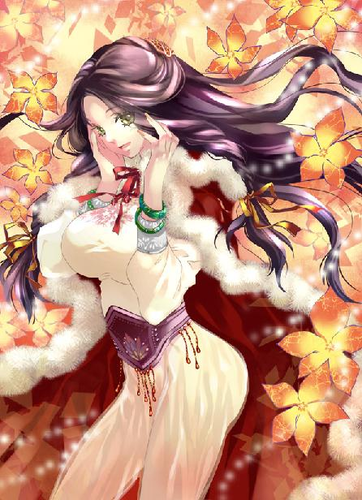
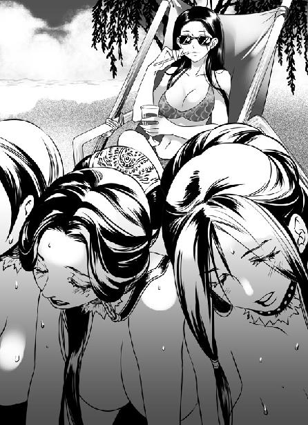
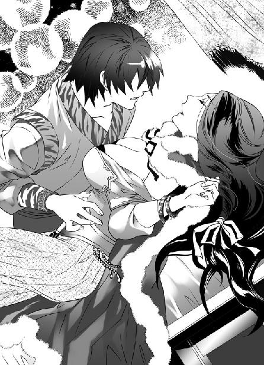

第19集·销神流志
建康篇（7/8）
出版日期：2011-02-11
【本集内容简介】
玄武湖上大战歇止，晋国世家大族互不相让，台面下忙着分赃较劲。程宗扬却收拢晋国后宫一干美妃，还与弱不禁风的云如瑶有了更多接触，天天乐不思蜀、好生快活！石灰坊、织坊也陆续有了丰硕成果，他所熟悉的现代产物一一重现。自从进入这个世界，终于让他享受到如此惬意的日子！
然而，萧遥逸为了创造平等社会的理想，远赴江州，他少了一个好友在旁；看似昏聩的王丞相知道他在后宫的“好事”，特意提醒他适可而止；偶然听云苍峰提及六朝地理，令他惊觉世界如此之大——胸无大志、有所惘然的他竟浮现出一个念头：他要去东海！他的家乡……
※ ※ ※ ※ ※

封面人物：云如瑶

插图：小紫训女

插图：云如瑶
低垂的柳条风中摇晃，晚秋的阳光暖暖洒在身上，和风拂过，将草帽边沿吹得一动一动。时值正午，正是秋高气爽时节，周围的玄武湖烟波浩渺，几日前湖上的鏖战已经消失无痕。岸旁成片的芦苇绽开无数白花，在阳光下随风漫舞。
天蓝如洗，槐荫深处露出了别墅一角。程宗扬舒服地呼了口气，架在鼻梁上的墨镜映出身前一团雪白美肉。
这会儿程宗扬躺在一张帆布做成的躺椅上，身下洁白的沙滩朝两侧张开，宛如一眉新月，围出一个亩许大小的泳池——不是池塘，正是一个标准型的泳池。
整座游泳池全部用白色大理石铺成，周围没有砌出边沿，而是从沙滩边缘由浅到深，东侧的最深处接近一丈。泳池两端各有一条水渠，将玄武湖水引入池中，水源用编织的蒲苇团滤过，清澈的池水在白色大理石间折射出澄净的碧蓝色彩。沙滩的沙子又细又白，在阳光照射下散发出耀眼的光泽。
躺椅旁边触手可及的位置，摆放了一张圆桌，上面摆着红茶、绿茶、鲜酿的果汁，还有一瓶上好的葡萄酒。桌旁立着一个美艳妇人。她胸前围着一条鲜红色绸巾，下身是一条同样材质的游泳内裤，赤脚站在沙滩上。两条白光光的美腿赤裸着，大片丰腴白腻的肌肤暴露在阳光下，雪滑无比。她垂着头，目光微微闪动，脸上泛起醉人的红晕。
躺椅另一侧的垂柳荫下，铺着一张墨绿茵毯。一个绝色丽人身无寸缕，赤条条卧在毯上，两手支颐，含笑望着躺椅上的男子，光洁的胴体如脂似玉。
程宗扬一手枕在脑后，一手懒洋洋地抬起来，“啪”地打了响指。穿着比基尼的美妇捧起盛满葡萄酒的高脚玻璃杯，顺从地躬下腰，递到他嘴边。
程宗扬咬住麦秆做的吸管饮了一口，被墨镜遮住的目光不由自主地落在美妇胸前，顺着她白滑的乳沟朝里面看去。
在他身上，另一个美妇正以倒骑的姿势跨在他腰间。她俯下身，两团白腻的乳球低垂下来，肥美的雪臀高高翘起，仿佛一团白花花的美肉在程宗扬腰间不住起落，卖力地套弄着他的阳具。从后面看去，丰美的雪臀又圆又大，臀间紧凑的菊肛和红嫩湿腻的性器完全暴露在阳光下，每一个细小的褶皱都纤毫毕露。
骑在程宗扬腰间的女子长发盘成华丽的云髻，髻上戴着一支镶嵌七宝的黄金凤钗，风韵犹存的玉脸布满红霞，媚眼如丝地淫叫着，一边像尺蠖一样耸翘臀部，一边伏着身子，用她丰满的双乳在程宗扬腿上摩擦。那具白生生的肉体香汗淋漓，肌肤上汗津津地布满晶莹的汗珠，在正午的太阳下散发出熟艳的光泽。
这处别墅在玄武湖深处一座滩岛上，虽然平常有人维护，但十几年没有人入住，许多设施已经荒弃。程宗扬从云家找了些能干的仆佣，花几天时间把别墅彻底清理一番，沙子也重新淘洗，整座别墅焕然一新，才带着几个美人儿过来享受。
相比于以前的日子，这些天只能用两个字来形容：舒心。自己梦里都不敢想过的事，这会儿已经成为眼前活生生的现实。
伏在自己身上，正耸着白花花的美臀，卖力与自己交合的是晋国太后周氏，也就是以前的芸娘；茵席上玉体横陈的是晋帝最爱宠的丽妃，以前的丽娘。而旁边粉躯半露，给自己举盏奉酒的，则是太乙真宗六大教御之一的卓云君。
程宗扬把目光从卓美人儿乳沟里收回，半眯眼观赏着眼前丰腻的雪臀。周氏红腻的性器蜜汁横流，一副沉浸在肉欲中不能自拔的骚态。那种淫媚样让程宗扬看得心动，拿起麦秆，把滴着红酒的一端放到美妇臀间，插到她淫艳的嫩肛内。正在套弄的周氏两手抱住屁股，把雪腻的臀肉扒开，红嫩的屁眼儿蠕动着，让滴酒的麦秆插进肛内，一边发出淫浪的叫声。
程宗扬笑道：“丽娘，你这婆婆有够风骚的。”
茵席上裸裎的丽人抿唇笑道：“奴家婆婆孀居多年，徐娘半老才尝到主人的乐处，倒像是情窦初开的样子呢。”
程宗扬侧过身，伸手在她娇美的下巴摸了一把，一脸坏笑地说道：“别忘了你出来的时候自己说的，这次来要做什么？”
丽娘含住他的指尖，媚眼如丝地舔舐片刻才娇声道：“奴家说，只要少主带奴家出来，奴家便和婆婆一道光着屁股给少主唱玉树后庭花。”
程宗扬哈哈大笑，得意非凡。
玄武湖一战之后，云家很快送还晋帝和太后，做出全面配合的姿态。而萧家则执掌禁军牢牢控制住太初、昭明二宫，摆明在谈判结果出来之前绝不放手。
当日禁军以除妖拥帝的名义攻入内宫，并没有多做扰乱，杀光宫内叛乱的太监和王处仲的荆州私军之后便退出内宫，封锁宫门，接管了内宫饮水、食物的供应，同时禁止任何人出入。
但这难不住程宗扬，当天夜里他就从暗道潜入宫中，除了拿回自己留在宫里的东西，还顺道瞧了瞧丽娘。丽娘接受了他的警告，在禁军入宫前就藏起来，躲过了这场兵灾。禁军退出后，宫中剩下的妃嫔宫女一片凄惶，她们大多数人都不清楚发生了什么事，这时古冥隐一党死的死、逃的逃，剩下的人人担惊受怕，不知还会有什么祸事发生。
程宗扬本来只是挂念丽娘，舍不得这个尤物受到伤害。结果一见之下，一个惶恐无助，一个血气方刚，一个寡女，一个孤男，天雷勾动地火，一来二去，顺理成章滚到一张榻上。
丽娘说起来是有夫之妇，不过晋帝那样子比死人也强不了多少，宫里又失去主心骨，人人自危。这个绝色宠妃把自己当成救星，曲意奉迎，不但让自己享尽鱼水之欢，也让自己心理上获得极大满足。
于是程宗扬从一开始的偶然探望，变成每夜必至，而且夜不空宿。丽娘不仅殷勤侍奉，还在他高兴时引来交好的姐妹求他庇护。这会儿宫里一片大乱，早就没人来管，何况能活下来的都不是三贞九烈的贤妇。这些日子下来，好一番花迎蝶舞，让自己都有些不知今夕何夕了。
昨晚程宗扬按例溜进宫里，说起自己在湖上的别墅，里面的沙发、吊灯、抽水马桶、弹簧床……各种稀奇古怪的东西，让丽娘满心倾羡。在宫里的遭遇使她对这些看似华丽辉煌，生活在其中却阴森可怖的宫殿早已心怀怯意，便在枕上软语央求，求他带自己出来散心。程宗扬虽然心里有那么点顾虑，但美色当前，而且别墅就在湖上，离宫城不远，便拍着胸脯一口答应，天亮前用一条小船把她们接了过来。
程宗扬贴在丽娘耳边，小声道：“别忘了我跟你说的。帮我搞定！”
丽娘瞥了他一眼，然后款款起身，胸前浑圆的玉乳摇晃着，走到芸娘身边扶起她的手臂，柔声道：“娘娘好热了呢，换个地方可好？”
芸娘两腿已经酸软，被她扶着离开躺椅，软绵绵走到绿柳荫下。丽娘在她耳边说了几句，芸娘回眸一笑，俯身跪在葱绿茵席上，翘起圆臀，两手抱着白滑的臀肉，骚媚地朝两边分开，露出插着麦秆的嫩肛，腻声道：“有请少主光临。”
丽娘纤指按在美妇臀沟间，轻轻拔出麦秆，将嫩肛分开，娇笑道：“少主，奴家婆婆的后庭花已经开了呢。”
程宗扬隔着墨镜看了卓美人儿一眼，挺起怒胀的阳具大剌剌走到芸娘身后，抬手拍了拍她的屁股，对着她圆翘的雪臀用力干入。
芸娘低叫一声，螓首扬起，脸上露出柔媚入骨的淫态。
透过墨镜，芸娘的肉体显得分外白腻。随着阳具进入，白花花的美臀仿佛膨胀起来，愈发肥圆。程宗扬大感兴奋，抱起芸娘肥白的屁股，用力干着她的屁眼儿，一边用眼角余光瞄着卓美人儿。
丽娘走到卓云君身畔，笑吟吟道：“这位姐姐生得好美呢。”
卓云君年龄与芸娘相仿，但外表年轻一些，看起来比丽娘大不了几岁。她有些勉强地挑了挑唇角，然后扭过头，分明不想和她交谈。
自己身上这些连内衣也称不上的布片是他特意让人做的，还起了个古怪名字，叫“比基尼”。上身红绸开口极低，故意收紧挤出乳沟，内裤又窄又小，后面则是比手指还细的丝带，一穿上就陷进臀沟里。
这种衣物比赤身裸体更令人感到羞耻，他却显得十分开心。如果在斗室间两人相对，自己穿着让他观赏也就罢了，可他不仅要自己在光天化日下穿出来，旁边还有两个陌生女子。卓云君羞不可遏，觉得穿着比基尼的自己简直成了她们眼里的笑柄。
丽娘没有在意她故作冷漠，反而笑道：“奴家认得姐姐呢。”
卓云君身体猛地僵住。
丽娘美目微睐，轻笑道：“昔日贵宗在九霄宫讲演道法，奴家曾见过姐姐。姐姐那时是太乙真宗的教御，姓卓，芳名叫云君的。”
卓云君右手拧住自己的左腕，手指一片冰凉。她想过自己身份会暴露，却没想到会在这里被人认出。晋国佛门远盛于道流，建康周边有大小数十处佛寺，却没有一处道观。建康一些信奉道流的世家往往要到建康以东的江乘，在九霄宫听取道法。卓云君随同门往九霄宫还是十余年前的事，以为建康未必有人认得自己，谁知被眼前这丽人一语道破。
丽娘挽住卓云君的手，“姐姐知道我们是谁吗？”
卓云君听到她们以婆媳相称，心下早已不齿。婆媳共侍一男，这样的淫浪举止，足以令任何人心生鄙夷，却偏偏被她们认出身份。恼羞之余，卓云君冷脸道：“谁知道你们是哪里来的粉头。”
“姐姐莫恼。”丽娘看出她的羞恼，却没有半点不悦，指着柳荫下的美妇低笑道：“那边被少主骑着的，便是奴家的婆婆。姐姐可知道，她在外面的身份是晋国的太后娘娘。奴家也不是什么粉头，三年前受封为贵妃，庾娘娘过世后，本来要做正宫的。”
卓云君被叫来时，两女早被脱得光光的，围着程宗扬争相献媚。她在旁边捧盏奉酒，浑不知那个淫浪的骚妇便是太后，而眼前这个怂恿婆婆与旁人交合的丽人竟是贵妃。
丽娘看出卓云君的惊疑，抿嘴一笑，走到芸娘身前，俯身娇笑道：“娘娘被少主弄进后庭，可快活吗？”
美妇双手抱着屁股，被干得娇喘连连，她一双雪乳压在茵席上，玉脸侧在一旁，面色潮红，精致的发髻微微松开，那支七宝凤钗歪到一边，对丽娘的调笑充耳不闻，只发出一串淫媚的娇呼。
丽娘取下芸娘的凤钗递到卓云君手中。握着那支钗子，卓云君慢慢抬起眼睛。
丽娘笑道：“姐姐信了吧。奴家出身张氏，虽然不是第一等高门，但也是上等门第。”说着她贴在卓云君耳边悄悄说了几句。
丽娘在宫里委屈求全，连古冥隐也能瞒过，这时言笑晏晏，亲切的姿态让卓云君慢慢放松戒备。
“真的吗？”
丽娘点了点头，用艳羡的口气道：“姐姐好福气呢，能陪在少主身边。奴家和婆婆想得到少主的宠爱可难了呢。”
卓云君咬了咬唇，低声道：“哪里的福气，我不过是……”
“咦？”丽娘讶道：“姐姐不是少主的姬妾吗？”
卓云君这才知道程宗扬在别人面前给自己留了面子，没有点破自己是供他专用的妓女身份。不知为何，这个解释让她感到一丝淡淡的欣慰。
丽娘悄声笑道：“少主好勇呢，奴家和婆婆在榻上轮流侍奉都被他干得泄了身子。不知道姐姐泄过身没有？”
“那是什么？”
丽娘一手拥着卓云君腰肢低笑道：“就是被少主的大肉棒硬硬地干到身子里面，干得泄了身子。你瞧，奴家婆婆快泄了呢……”
绿柳荫下，那美妇裸着白白的屁股，被程宗扬干得花枝乱颤。她失神地张着眼睛，红唇微分，喉中不时发出销魂的媚叫。
卓云君看得面红耳赤，正待扭过脸，却见丽娘蹲下身，轻抚美妇的面孔笑道：“娘娘，让旁边的姐姐仔细看看好吗？”
那位太后娘娘早已无力反抗，被她双手抱着屁股，用力分开白花花的臀肉，将自己臀间正在交合的部位暴露在阳光下。
卓云君大吃一惊，身体靠在圆桌上，将上面的杯盏撞得一阵摇晃。她原以为两人蝶戏用的只是平常的背入式，这时才发现太后被干的是另一个肉孔。看着那小小的肉孔被阳具撑开到不可思议的尺寸，卓云君不由自主地夹紧双腿，心里怦怦直跳。
程宗扬透过墨镜打量着卓美人儿的神情，心里仿佛有一团火在烧。今天他存心要让卓美人儿自己乖乖把后庭献出来，为此不惜让芸娘和丽娘一同现身说法。本来这事多给小紫几串钱也能搞定，只不过那死丫头这些天不知道吃了什么药，常常一个人跑得无影无踪，只好自己摆平。
第一次近距离目睹肛交，直看得卓云君花容失色。美妇敞露的雪臀间，那只小巧的屁眼儿像撕裂一样被肉棒撑开，肛洞周围细密的菊纹被完全拉平。阳具进入时，整只屁眼儿都被挤进臀内，拔出时又被带得翻出，肛内红腻的嫩肉像鲜花一样绽开，在阳具周围颤动，散发着玛瑙般艳红的光泽。粗长的阳具直挺挺干进臀内，顶得美妇柔颈昂起，翘着舌尖发出短促的媚叫。
卓云君扶着圆桌，眼神惊疑不定，心道：“这……怎么可以？”
丽娘似乎看出她的心意，在她耳边笑道：“姐姐也是女子，该知道女人身子有三处地方能让男人开心。女子的后庭花最是娇嫩，又是不雅的秽处，就是平常夫妻之间也未必肯让自己的夫君享用。奴家和婆婆对少主敬慕非常，为了少主开心，才心甘情愿献出后庭。”
卓云君被她毫不避忌的言语说得面红耳赤，良久才道：“那样的秽处，怎可亵弄？”
丽娘掩口笑道：“姐姐有所不知。女子后庭狭紧又容易使力，男人的阳具放在里面就像被一个肉箍束住，进出时别有一番快活。咱们女子的羞处被少主用过，这时再翘着屁股，把自己夫君也未曾用过的部位显露出来，让少主享用，那心思就像把一件没人碰过的礼物放在他面前，等人拆开。而且少主阳物又大又热，干在里面比起羞处的交合另有一种妙态……”
丽娘话音未落，忽然美妇浑身一紧，肥白的雪臀紧紧夹住阳具，屁眼儿用力收缩，接着敞开的美穴间喷出一股液体。戴着墨镜的程宗扬咬紧牙关，用力挺动阳具。在他身下，那位尊贵的太后像淫兽一样尖叫，两条雪白的大腿剧烈地抖动，下体淫汁四溢。
“啵”的一声，阳具像拔出瓶口的塞子般从屁眼儿中拔出。美妇臀间留下一个浑圆的肉孔，几乎能看到肠道深处蠕动的肠壁。
卓云君看得心旌摇曳，玉指在桌沿捏得发白。她目光落在程宗扬昂起的肉棒上，顿时像被烫到般闪开。
程宗扬把芸娘抱在怀中，在娇喘的美妇身上揉捏。卓云君侧过脸不肯再看，两条玉腿却不由自主地并紧，小腹微微起伏。
丽娘一笑，拿起桌上红酒款款走到程宗扬面前，然后屈膝跪下。她将红酒淋在程宗扬怒胀的阳具上，张口含住他的龟头，细致地舔舐起来。
卓云君脸颊一阵滚烫，眼前白色的沙滩反射着刺眼的阳光，让她感到一阵眩晕。
丽娘将阳具舔舐干净，然后站起身，洁白的玉体卧在躺椅上，含笑看着面前的男子，翘起一条白滑的美腿，柔柔放在他肩上。玉腿间敞露的秘处像娇艳的玫瑰一样绽开，露出柔腻的穴口，对着主人火热的阳具。
“啊……”
丽娘喉中发出一声娇媚的低叫。被她舔舐过的阳具对准微张的蜜唇，用力顶入。
程宗扬一手抱着丽娘的玉腿，一手抓住她丰美的雪乳，弓身肏弄她的艳穴。丽娘躺在椅上，白软的纤足随着他的动作，在他肩头一翘一翘，另一条玉腿垂在躺椅边缘，将被阳具撑满的美屄暴露出来。
丽娘本就生得妩媚艳丽，这时裸体受淫，每一寸肌肤都显得媚态横生。被程宗扬肏弄十几下之后，她用撒娇的口气央求道：“少主，奴家也要像婆婆一样，让少主从后面疼爱奴的后庭……”
这是程宗扬和丽娘商量好的，要引诱卓美人儿自愿跟自己肛交。他放开手，丽娘转过身，把散乱的发丝拂到耳后，然后伏在躺椅上，在卓云君面前翘起圆润的玉臀，低笑道：“姐姐，少主要光顾奴家的后庭了。”
卓云君有些吃惊地咬住唇。丽娘雪白的粉臀间，那只屁眼儿像胭脂涂过般娇红明艳，小小地缩在一起，连小指的指尖也未必能容纳。丽娘长发低垂，朝她嫣然一笑，两手分开臀肉。
接着卓云君看到粗大的阳具伸到她臀间，龟头硬梆梆顶住丽人柔艳的嫩肛。红嫩的屁眼儿在龟头挤弄下软软张开，像一张红腻的小嘴，一点一点将龟头吞入肛中。
丽娘呻吟着昂起螓首，勾魂的媚眼却望着旁边的卓云君，腻声道：“少主阳物好大，人家的后庭花开了呢……”
穿着比基尼的美人儿下意识地并紧双腿，丰美的双乳微微鼓胀，乳沟渗出细细香汗。
丽娘在躺椅上摆出冷艳的姿态，那双犹能言语的瞳眸在卓云君身上目光流连，像在炫耀，又像是诱惑。
“少主人的大龟头塞到奴家肛蕾里了……好像一颗硬硬的石子……啊呀……奴家的肛蕾被撑开了……好热……”丽娘媚声道：“少主，奴家的屁眼儿紧不紧……”
程宗扬嘿嘿笑道：“真的很紧啊。”
“啊！”丽娘低叫一声，“龟头插进来了……肠道里面好胀……啊……少主的大肉棒好硬，奴家的屁眼儿都被干穿了……”
丽娘挺起雪臀，将屁眼儿毫无保留地绽露出来，让阳具长驱直入，直到程宗扬的小腹顶在自己臀上。
丽娘眉眼间的媚意浓得仿佛要滴落下来，湿淋淋的美目勾引着卓云君，娇声道：“少主的大肉棒整个干到人家屁眼儿里了，把奴家的肠道塞得满满的……”
她一手伸到身后，抚摸着程宗扬腹部结实的肌肉，一边用软腻的声音道：“少主身体好壮呢。”
卓云君目光停滞了一下。阳光下，程宗扬腹部的肌肉一块块棱角分明，像雕刻一样清晰，随着他身体挺动有力的动作，在丽人如雪美臀的对比下，更显得野性十足，充满雄性阳刚的力量。
不知道是不是床上运动做多了，程宗扬最发达的肌肉就是腹肌。从上到下八块腹肌，微一用力就结实地绷紧，看起来既强悍又精壮。他腹下阳具更是怒勃而起，铁棒一样捅在丽人粉团般的美臀间，仿佛仅用一根阳具就能将她娇美的身子整个挑起。
丽娘软绵绵伏在躺椅上，媚眼如丝地望着卓云君，带着一丝满足的呻吟呢喃道：“主人的阳具好热……奴家的屁眼儿都要烫化了……哎呀……姐姐，人家的屁眼儿都翻开了……”
充满诱惑的声音不住传来，那种入骨的满足和淫媚的妖冶，让卓云君呼吸都颤抖起来。
随着阳具进出，丽娘媚叫不绝，将肉棒在自己肛内的每一丝动作都巨细无遗地描述出来。绘声绘色的叙说让卓云君感同身受，仿佛自己臀内也有一根阳具在进出捅弄。
丽娘忽然拉住卓云君的手指，笑道：“卓姐姐，你下面湿了呢。”
卓云君身体像发烧般滚烫，双腿已经软得毫无力气，被丽娘一扯便跌到椅上。
丽娘让开位置，和芸娘一起把卓美人儿按在躺椅上，让她面对程宗扬勃起的阳具。
卓云君维护着自己最后一点神智，喘息道：“不……不要……”
丽娘笑啐道：“有什么害羞的？奴家和婆婆那样的身份都当着姐姐的面让少主干过，何况姐姐还是少主的姬妾呢。”
丽娘是引诱，程宗扬则是威逼，凶巴巴道：“卓美人儿，乖乖把内裤脱了！免得我叫你妈妈来！”
卓云君身子一抖，在丽娘和芸娘的哄弄下，她咬住唇，两手挽住内裤边缘，慢慢褪到臀下。
卓云君的内裤已经湿了一片，秘处更是春潮涌动。两个美娇娘一手抱住她一条腿，将她双腿分开。丽娘掩口笑道：“姐姐的耻毛好浓呢。”
卓云君面红过耳。那对婆媳下身毛发都剃得干干净净，光溜溜地裸露出两只美穴，相比之下自己倒成了异类。
丽娘笑道：“姐姐阴户好嫩，不知道是谁给姐姐开的苞？”
程宗扬得意地说道：“当然是我了，卓美人儿，是不是？”
卓云君无奈地点了点头。忽然下体一紧，湿腻的玉户被旁边的芸娘分开，卓云君魂飞魄散，本能的反感使她挣扎起来，想摆脱陌生人的手指。丽娘在她耳边轻轻说了一句，卓云君顿时一僵。
“好姐姐，少主要干你了。”
那根狰狞的阳具顶在下体，然后毫不客气地捅了进去。卓云君全部心神放在腹下，眼看着那根肉棒干进体内，重重顶住花心，才意识到自己正在旁人的注视下与人交合。
强烈的羞耻感潮水般涌来，但很快就被肉体的快感冲淡。
坚硬火热的阳具在蜜穴中进出，每一下都捣在花心上。卓云君紧绷的身体像湖水一样融化，被阳具捅弄的美穴淫液四溢。
正午的阳光使卓云君的视线都映得发昏，只有肉体的快感一波接一波袭来，让她下意识地淫叫出声。
身体仿佛在波浪上起伏，时而堕入谷底，时而又被抛上云霄。天地不停旋转，一切都变得模糊。唯一清晰的只有体内那根粗长、滚烫的肉棒，一下一下不停地捣入蜜腔深处，撞击着自己柔嫩的花心。
阳具忽然尽根而入，将湿滑的蜜穴撑得又胀又紧。卓云君从眩晕中吃力地睁开眼睛，正看到程宗扬一脸坏笑的面孔。
“卓美人儿！”他宣布说：“我要开你后庭的花苞！”
恍惚中，卓云君感到自己点了点头。
※ ※ ※ ※ ※
阳光透过柳条，在一具雪滑的躯体上留下斑驳的光点。卓云君被搀扶着伏在帆布躺椅上，鬓侧发丝垂在羞红的脸侧，她微微战栗着，细软的腰肢向下弯曲，将光润的雪臀耸翘起来。
一个硬硬的物体碰到唇边。卓云君睁开眼，只见他递来一根剥过皮的树枝，让自己咬在嘴里。卓云君不知道这是什么意思，但还是乖乖张口咬住。
臀间传来一股温热的气息，接着小小的肉孔被粗圆的龟头顶住。卓云君浑身一抖，这才意识到龟头的尺寸。那龟头像火热的拳头，硬梆梆地顶在臀肉上，将自己的臀肉挤得张开。秘藏在臀肉间的肛洞小小的，几乎连龟头顶端的马眼也无法容纳。
白色的树枝在齿间传来树汁青涩的苦味，卓云君咬紧树枝，认命般的闭上眼睛。那两个身份尊贵的婆媳刚被同一个主人插过屁眼儿，既然她们的身体能够承受，自己应该也能容纳下主人的阳物。
“呃……”
卓云君昂起玉颈，齿间发出一声痛叫。
炽热的龟头硬硬挤进肛洞，柔嫩的屁眼儿像要迸裂一样被挤得扩张。卓云君的雪臀本能地向前移去，试图躲避阳具的进入。丽娘和芸娘嘻笑着扯住她的手臂，从两边将她白滑的臀肉扒开，将小巧的屁眼儿敞露在阳具的重压下，一边娇声道：“姐姐忍一忍便是了。”
程宗扬跨在躺椅上，两手搂紧卓云君的腰肢，阳具一点一点挤进她未曾被开垦过的嫩肛中。卓美人儿的肉体对痛楚的感应过于强烈，程宗扬怕她吃痛不过，不敢十分用力。饶是如此，卓云君仍然痛得浑身战栗，被扯住的手臂不住用力。
丽娘在旁提醒道：“少主，长痛不如短痛。”
程宗扬心领神会，抱着卓美人儿的腰肢用力一顶，那只紧凑的屁眼儿猛地张开，被阳具硬生生顶进肛内。
卓云君口鼻中发出一声痛叫，丰满的雪臀像被阳具顶起一样猛地向上一翘，原本紧密的嫩肛此时被撑得张大数倍，菊肛边缘被拉成一圈细细的红肉，紧紧箍住粗壮的棒身。
卓云君这才知道他为什么让自己咬住一截树枝。身体的痛楚仿佛又一次失去处女身，屁眼儿仿佛被龟头捣碎，传来撕裂般的痛意，而且拳头般粗圆的龟头还在自己直肠内挺动着，像坚硬的石碾在肠道内摩擦，将肠壁上丰富的褶皱一一拉伸碾平。
臀内传来的胀痛使卓云君感觉自己肠子都被撑裂了，巨大的伤口从屁眼儿一直延伸到臀内深处，仿佛整个屁股都被肉棒干得裂开。
卓云君咬住齿间树枝，喉中发出短促而尖厉的痛叫。她玉体颤抖，两行珠泪顺着面颊流到鼻尖，连串滚落。芸娘的手腕被她手指抓住，皮肤都被捏得发红。她力气不及卓云君，刚才又泄了身，被她一挣几乎摔倒。
程宗扬一口气把阳具全部干进卓云君体内，一边抱住剧痛的卓云君，在她耳边道：“别怕、别怕，一会儿就不痛了。”
丽娘羡慕地看了卓云君一眼，笑着解开她的乳罩，一手握住她酥滑的雪乳，轻轻揉弄。
阳具在肛内抽送着，卓云君痛得几乎昏迷。她完全没有想到后庭开苞的痛楚会如此强烈，像被一根烧红的铁棒捅入臀中，在里面来回搅弄。齿间的树枝使她叫不出来，只能拼命摇头，发出乞求般的泣声。
程宗扬几乎心软下来，但这次半途放弃，下次想引她乖乖答应和自己肛交，天知道是猴年马月。反正就是痛点，忍一忍就过去了。
程宗扬收起怜香惜玉之心，抱着卓美人儿，阳具用力在她肛内挺动。
碧烟般的柳丝深处，一双小靴在枝上轻轻摇晃。柳条下，咬着树枝的美妇趴在躺椅上，粉臀高举，柔嫩的后庭第一次被异物捅入，在主人毫不怜惜的奸淫下痛得死去活来。她敢肯定这会儿取出她咬着的树枝，卓婊子连爹爹都能叫出来。
旁边两个粉头一个骚浪一个娇媚，这会儿正扒着卓婊子的屁股，让那个大笨瓜从后面干卓婊子的屁眼儿，还笑得花枝乱颤。好得意吗？
程宗扬正干得快活，一根树枝突然掉下来。他连忙挥臂打开，接着又是一根。
程宗扬抬起头，顿时一阵光火，“死丫头！你吃饱撑的！”
小紫从树梢跳下来，冷着脸说：“有人找。”
“谁啊？”
“你去了就知道。”
程宗扬呼了口气，不满地说：“没看到我正在忙吗？”
小紫绕着躺椅走了一圈，忽然一脚踢在程宗扬屁股上。
“我干！”程宗扬一声大叫。
丽娘和芸娘都吓了一跳，连忙松开卓云君。
程宗扬脸色铁青，阳具一跳一跳，还没有经历高潮就在卓美人儿又紧又暖的后庭里喷射起来。
“死丫头！”程宗扬大吼一声。
这死丫头太过分了，自己好不容易才把卓美人儿的屁眼儿开垦得差不多，这会儿正在快活，谁知死丫头竟然一脚踢中自己精关，强迫自己射精。
丽娘有些心痛地抚住程宗扬挨踢的部位，嗔道：“你怎么能这样？”
小紫眨了眨眼睛，忽然绽出一丝笑容，“程头儿，你好有本事哦，勾搭上这样一个大美人儿，难怪整天找不到你呢。”
丽娘有些讶异地望着这个天仙般的小美人儿，问道：“你是谁？”
小紫伸手画了一圈，笑吟吟道：“我是这里的女主人啊。”
丽娘水灵灵的妙目望向程宗扬。
程宗扬瞧出不妙，连忙道：“丽娘，别说了。”一边拔出阳具，一边板起脸道：“死丫头，你跑哪儿去了？”
小紫折下一支柳条在手里无聊地把玩着，一边眨眼，“我见了几个傻瓜。”
程宗扬琢磨了一下才恍然想起，“你是说星月湖的八骏吧？你和他们见面了？”
小紫摇着柳枝道：“几个傻瓜有什么好看的？”
程宗扬悻悻道：“按你的标准，我这么聪明的人是大傻瓜，小狐狸比我强那么一点算傻瓜。你说那几个都是傻瓜，看来水准都比我高一点。咦，你去见他们怎么不叫上我呢？”
小紫哼了一声，扬起下巴。
程宗扬话说出来就觉得不对。自己这些天整日在宫里胡混，如果不是今天到别墅来，想找到自己就难了。他看着小紫的脸色，有些心虚地讪讪道：“加上小狐狸，八骏还有七个人，他们是不是都来了？嘿嘿，见面礼总是有的吧？”
小紫似乎对这个话题兴趣索然，没有开口，只转头朝躺椅上看了一眼。卓云君已经听到她的声音，本能地蜷起身体，这时撞上她的目光，身子顿时一抖，顾不得臀间剧痛，勉强撑起身体，在她脚前拜倒，低声道：“女儿见过妈妈……妈妈万福。”
小紫矜持地点头，“乖女儿，你也好呢。又学了新花样来讨好主子，真乖呢。”
卓云君怯怯地不敢作声。
小紫望向旁边的芸娘，用嘲讽的口气道：“这位奶奶好像挺有身份，怎么也和我们程头儿睡到一起了呢？”
程宗扬喝道：“行了，死丫头，我借你的岛玩玩，用不着给我摆脸色吧？”
小紫跳过来亲密地拥住他的手臂，弯长浓密的睫毛一眨一眨，用娇嫩的声音甜甜道：“人家哪儿有啊。程头儿，你快去见客人吧。两位娇客让小紫照应就行了。”
程宗扬“嘿嘿”笑了两声，然后喝道：“少跟我来这套！要去一起去！”
丽娘和芸娘看看程宗扬，又看看这个精致如画的小美儿，神情间除了尴尬，还有些隐隐的不安。她们两个不顾身份在别人岛上与一个异族商人白昼宣淫，一旦传扬出去又是一场轩然大波。旁边的卓云君没有被小紫叫起，只能羞窘地跪在沙滩上，一手掩着受创的雪臀，黏稠的精液正从胀痛的肛中缓缓淌出。
程宗扬跃进泳池，用布巾抹净身体，然后换上衣物，扯着一脸不情愿的小紫离开沙滩。这滩岛独处湖中，离最近的湖岸也有半个时辰的水程，不怕这三个美人儿会走失。要紧的是把死丫头拉走，免得弄出血案。
※ ※ ※ ※ ※
宽阔的客厅中，巨大华丽的水晶吊灯让秦桧啧啧赞叹。他见闻也算得广博，但这处别墅的每件陈设都别出机杼，连一桌一椅都与众不同，让人耳目一新。
程宗扬穿着大花衬衫短裤，大摇大摆地进来，“会之，原来是你啊。”
他往沙发上一坐，懒洋洋道：“有什么事赶紧说，我还忙着呢。”
玄武湖一战的另一个后果，是自己吸收了太多死气，真阳充沛得直想外溢。刚才只干了一半就被死丫头暗算射精，程宗扬实在很不过瘾，只想赶紧把秦桧打发了，好回去左拥右抱。
秦桧第一句就让程宗扬坐直身体，“一个时辰前，宫中下了诏书。”
“怎么说的？”
“诏书说贵妃孟氏昨日产子，陛下喜得皇子，下诏大赦天下。”
程宗扬等了一会儿，“完了？”
秦桧点了点头。
程宗扬叫道：“这算什么诏书？”
玄武湖之战，王处仲败死，少陵侯萧道凌惨胜。在画舫谈判中，丞相王茂弘与谢太傅联手压制萧侯，桓大司马临阵倒戈，致使萧侯功败垂成，愤然离席。不过萧家并没有就此收手，一直牢牢把持着禁军与石头城水师大营，更将太初、昭明二宫死死握在手中，摆出绝不善罢干休的姿态。
晋国制度，诏书不是宫中随便一下就算的，必须由丞相签署才能生效。晋帝在萧家手中，丞相是王茂弘，程宗扬原以为诏书既然颁布，肯定是两家谈定的结果，内容对晋国未来政局极为重要，没想到是不痛不痒的一件破事。
程宗扬发了句火才没好气地说：“你从哪儿得的消息？是不是真的？”
秦桧徐徐道：“是王丞相、谢太傅对在下亲口所言。”
“哈！”程宗扬对这死奸臣刮目相看，“两位大佬可真给你面子啊。”
秦桧平静地说道：“今日黎明，王丞相、谢太傅、萧侯爷、云三爷联名请公子赴东府城议事，在下遍寻不见公子，只好越俎代庖。”
黎明那会儿自己正在内宫的华林园快活，连小紫都没找到，他能找着自己才见鬼了。程宗扬干笑两声，“原来是这样啊。哈哈哈哈……对了，听起来大家似乎谈妥了，结果是什么？”
“陛下失德只是传言，朝中诸公的意思，既然陛下身体不豫，当在宫中慢慢调理。至于宫中妖人与汉安侯王处仲勾结、图谋作乱，已由萧侯领军平定。桓大司马、徐司空、王侍中、周仆射联名上书，为首的古冥隐、王处仲悬首示众，余党枭首，已经结案。临川王乃国之贤王，忠心可嘉，下诏在建康赐宅居住。”
“就这么算了，大家还太太平平照常过日子？有本事啊。”
程宗扬真服了王茂弘的手段，这么大的事，琅玡王家连毛都没掉一根。
“萧家呢？这种条件他们也能忍下来？那八千禁军难道是纸扎的？”
“少陵侯萧道凌平叛有功，晋升镇东大将军，加封食邑五百户。”秦桧停顿了一下，慢慢道：“兼任江州、宁州刺史。”
程宗扬精神一振，“这是什么交易？”
秦桧笑道：“萧侯晋位大将军，有权建牙开府，自辟僚属。江、宁二州虽然不足六州之地，但西连大江，南及云水，有山河表里之固。堂上双方已经约定，两州政务、军务，朝中一概不予插手。”
程宗扬心下思忖：小狐狸狮子大开口，要把建康周边六州全划为军镇，若真遂了他的意，大家也没有什么好商量的，以后都在萧家屋檐下讨饭吃得了。这会儿咬下两块肥肉，名正言顺划为萧家的地盘，也差不多够意思了。
“云家呢？云老哥辛辛苦苦不会只换了一条渠吧？”
“云家拿到了盐业生意。”
“什么！”
程宗扬差点跳了起来。盐、铁这两个行当在六朝至少有四朝都是官府专营。单从利润说，云家得到的盐业生意只怕比萧家的两州获利还要丰厚。
秦桧笑道：“云老爷子本来要把盐铁两个行当一手拿到，但谢太傅坚决不同意，只允许云家经营盐业，至于铁器可以自行炼制，与海外交易，绝不能在境内贩卖。我瞧云老爷子虽然脸色不悦，其实心里还是挺得意的。往后挂着云家徽记的盐船就可以在境内畅行无阻了。”
萧家、云家各有所得，朝廷也安然无事，一场偌大风波就此风平浪静，日子该怎么过还怎么过。程宗扬不得不服王茂弘这把稀泥和得真有本事。而这样的结果恐怕也是最好的。
想着程宗扬有些奇怪地问道：“他们几家分赃，叫我去干嘛？”
“这是萧家和云家的意思。”秦桧笑道：“我猜度他们两家也怕彼此争执起来，便宜了王家和谢家，想让公子当个和事佬。”
程宗扬笑道：“少来。云家早把陛下和太后送回宫里，牌都给萧家了，还怕什么争执？”
秦桧笑眯眯道：“正是因此，才更要公子出面。”
程宗扬哼了两声，突发奇想道：“他们各捞各的，分赃分得不亦乐乎！我呢？我也辛苦这么多天，难道没我的一份？”
秦桧露出为难的表情。
程宗扬失望地说：“真没有啊？”
“属下惭愧。”秦桧说着惭愧，脸上却没有一点惭愧的表情，反而有些尴尬。
程宗扬讶道：“秦桧啊秦桧，论起奸猾来，我看小狐狸都比不上你，难道还有人能硬吃你一道？到底怎么回事？”
秦桧道：“属下特别问过王丞相和谢太傅，我家公子出生入死，一身是胆，如今总该有些报酬吧。”
程宗扬连连点头，“说的不错，这话太有理了。那两个老狐狸脸皮再厚也不好意思装作没听到吧？”
“属下问完，王丞相咳了半晌也没开口。”
程宗扬恨得牙根发痒，“老家伙又装糊涂！谢太傅怎么说的？”
秦桧也禁不住咳了几声，才吞吞吐吐说道：“谢太傅一听，比属下还惊讶，问属下：贵主人整日在宫里厮混，还想要什么？”
程宗扬瞠目结舌。想不到自己这几日的荒唐看似无人知晓，其实全落在旁人眼中。半晌他跳起来，“我干！我在宫里关他们屁事啊！两个老家伙什么意思？就这么把我打发了？借花献佛也不是这个借法吧！拿这些来搪塞我，他们以为我程宗扬是什么人！精虫上脑的好色之徒吗！”
秦桧挺身愤然道：“只要公子一句话，属下便是拼上一腔热血也要为公子分说明白！”
程宗扬扭过头，“什么话？”
秦桧正容道：“只要公子不再入宫，属下定把公子的一份讨要回来！”
程宗扬琢磨片刻，然后严肃地摆摆手，“此事还是从长计议。”
秦桧一声不响地坐下来。
程宗扬看着他的脸色，小心翼翼地问道：“会之，你是不是觉得我有点那个……那个……算了，你知道我就不说了。”
秦桧面无表情地说道：“公子身为家主，在下只有奉命效力而已。”
程宗扬宽慰道：“世上有的是钱，想挣钱还不容易？他们不给，咱们自己挣嘛。好了，好了，你别把脸拉那么长。我这会儿明白给你说吧，我是跟丽娘有一腿，够坦白吧？我虽然有那么一点点小小的好色，但这事真和好色没多大关系。说实话，丽娘她们真的挺可怜的。守着那个废物，连自己最起码的安全都保不住。怎么说我也是个男人，对吧？以前大家又有点交情，总不好干完就翻脸不理吧？”
程宗扬推心置腹地说道：“萧家和云家一个得了地，一个得了利，我没有他们那样的雄心，只想安安稳稳过日子，活得越久越好。力所能及帮别人一把，这点要求不过分吧？”
程宗扬靠在沙发上舒服地摊开双手，“会之你瞧，这世上有太多可以享受的好东西，该享受的时候何不尽情享受呢。”
秦桧微微叹了口气，“是。”
程宗扬忽然跳起来，眉飞色舞地说道：“你说这事王丞相和谢太傅都默认了是吧？哈哈哈！会之你去忙吧，没什么大事别来叫我！”
说着他左右一看，“小紫呢？我干！那死丫头又跑哪儿了？”
※ ※ ※ ※ ※
日影微微西斜，绿柳荫下，小紫穿着浅紫色比基尼，一身清凉打扮，裸露着雪嫩的肌肤。她小巧的鼻梁上架着那副墨镜，一手拿着一杯红茶，嘴里咬着麦秆，舒适地躺在帆布椅上。
躺椅扶手上系着三条皮绳，每条皮绳带着一个翻毛的皮制颈圈，套在一个女子赤裸的粉颈中。
小紫面前并肩排列着三具白滑的肉体。中间是芸娘，左边是丽娘，右边是卓云君。三个美人儿都脱得光溜溜一丝不挂，除了颈中的皮项圈，身上没有一丝衣物。那些颈圈不知是小紫从岛上哪个角落找到的，皮毛已经脱落，又宽又硬的皮革上包着已经褪色的金属钉，三女像母狗一样肩并肩趴在雪白的沙滩上，高高翘起雪臀。
小紫可爱地偏着头，一边含着麦秆吸着红茶，一边伸出雪白的玉足，用趾尖在芸娘臀间拨弄。
芸娘两手撑地，双膝用力分开，敞露出鲜红美穴。白玉般的脚趾在她穴中灵巧地挑动着，将她蜜穴翻开，宛如一朵淫艳的肉花，在阳光下颤巍巍地蠕动。
程宗扬咬牙道：“死丫头！项圈在哪儿找的！”
小紫仿佛没有看到程宗扬阴沉的脸色，她若无其事地吐出麦秆吸管，浅浅笑道：“捡的。好像是拴狗的链子吧，给她们用还挺合适呢。”
程宗扬叫道：“你怎么这么爱欺负人呢？”
小紫笑嘻嘻道：“你那些书里有个好玩的故事，说有个太后生性淫荡，后来国家灭亡了，她就带上儿媳，一个太后，一个皇后，两个人一起在妓院挂牌接客。你猜是不是她们两个？”
“那些胡扯你也信！”程宗扬底气不足地说道：“这跟她们有什么关系？”
“人家也不知道啊。”小紫放下玻璃杯无辜地眨眨眼睛，“她们说自己是你叫来的粉头。你知道人家最喜欢又乖又听话的粉头了，就给她们讲故事。她们听了好高兴，答应扮母狗让人家开心。”
小紫扬起右手的柳条，朝身前美妇臀上打了一记，笑吟吟道：“骚婆婆，用力点啊。”
芸娘羞愧地侧过脸，当着程宗扬的面挺起雪臀，用柔腻的美穴套弄女主人的脚趾。
程宗扬生气地抓住柳条，一把夺了过来，丽娘却在旁边不好意思地小声说道：“程少主……奴家和婆婆是自己愿意的。”
程宗扬看看丽娘，又看看小紫，“死丫头，你又干什么了！”
丽娘连忙道：“真的。”
小紫嘟嘴道：“你自己听见的。”
程宗扬蹲下来在丽娘耳边道：“她讲了什么故事？”
丽娘摇了摇头，她抬起头，神情间没有多少受虐的屈辱，而是一种略显无奈的苦笑，轻声细语地说道：“这位姑娘好聪明，几句话便套出我们的底细，连我和婆婆在画舫接客的事都知道了。我和婆婆只好承认下来，她说自己会编鼓儿词，若是编一个，明天全建康人都会传唱……”
程宗扬忍不住道：“你傻啊！”
小紫是哪种妖精？没有把柄还要制造把柄，她们竟然乖乖把底细都露出来，还不被死丫头抓个结实？
丽娘无奈地说道：“紫姑娘只是玩游戏，奴家和婆婆便陪她开心就是了。”
程宗扬脸色不善地说道：“她要玩，你们就让她玩啊？”
丽娘看出他的不悦，轻笑道：“卓美人儿告诉我，紫姑娘是这里的女主人。奴家和婆婆已经服侍过少主，再服侍女主人也是应该的。”
恐怕卓云君也不明白自己和小紫的关系，丽娘更是错以为自己和小紫是一对夫妻，拿出服侍自己的姿态殷勤服侍。程宗扬气都不打一处来：我有死丫头那么变态吗？
程宗扬刚要开口，远处有人叫道：“公子爷！小侯爷前来拜访！”
小紫哼了一声，“你还怕我把她们打死啊？”
程宗扬心里哀叹，面上却不服软，伸手飞快地在她脸上捏了一把，“口气再酸点都能炒菜了。别乱来啊！我见过小狐狸就回来！”
※ ※ ※ ※ ※
萧遥逸摇着扇子，意态闲适，从外表怎么也看不出他身受六创，到现在还有几处伤口在溢血。
看到程宗扬的花衬衫、大短裤，萧遥逸先是愕然，然后愤然，最后把扇子一收，倒在沙发上叫道：“什么世道啊！我们在外面拼死拼活，当牛做马，程兄却在这里享清福！”
程宗扬剥了颗橘子给他递过去。小狐狸和古冥隐交手时右腕受了伤，别人看不出来，他是知道的。
“好说！我把这岛给你，你把江州、宁州给我，我替你当牛做马去。”
萧遥逸张开嘴让他把橘子扔进来，“吧唧吧唧”吃完，一脸苦恼地说道：“你这不是要我的小命吗？我们星月湖两千多名兄弟你替我养啊？”
程宗扬坐下来，“你的兄弟都到建康了？”
萧遥逸道：“本来想给你引见的。谁知道程兄神出鬼没，小弟只好直接请小紫姑娘过去一叙。”
程宗扬也很想见见这几位追随过岳鹏举的星月湖八骏，“反正都在建康，大伙儿再找个时间见面好了。”
萧遥逸摇了摇头，“这次没机会了，他们已经走了。”
“这么着急？”
“六哥受了伤，孟老大、二哥、七哥要找地方帮他疗伤。”
程宗扬讶道：“受了什么伤？建康不能疗伤吗？”
“六哥在京口撞上黑魔海一位幽长老，被他砍伤右手。不过那个幽长老也被六哥和七哥联手砍了脑袋。”萧遥逸拍案道：“这一仗黑魔海多少吃了点亏，也算替哥哥吐了口恶气。”
幽长老这个名字好像挺熟悉……对了，那个倒霉的飞鸟熊藏就是幽长老从东瀛招揽来的。
程宗扬道：“他们见着小紫没说什么吧？”
萧遥逸顿时挑起拇指，眉飞色舞地赞道：“来的时候几个兄长还在担心，怕紫姑娘从小失教，万一成了个野丫头，让我们兄弟愧对岳帅。没想到紫姑娘一出来就把他们都震住了！那模样！那作派！天生的名门淑女啊！”
程宗扬险些噎死。死狐狸，真瞎了你的狗眼，知道你们那位淑女千金这会儿在后面干嘛呢？
萧遥逸喋喋不休地说道：“紫姑娘不但姿容无双，有倾城之色，而且举止斯文，谈吐又温柔又优雅，那风范，连公主都比不上。六哥、七哥也是出身豪门，见到紫姑娘也看傻了。哈哈，五哥那种怪人都忘了装瞎子，连说话都不敢高声，只怕那口气吹得大点，把紫姑娘吹走了。”
程宗扬捂着小腹，像痛经一样咧嘴，无力地点点头。
萧遥逸叹道：“我们兄弟本来商量把手里的产业分成三份，一份是月霜姑娘的，一份给小紫姑娘，还有一份我们兄弟暂时代管，等找到岳帅最后一个女儿再交出来。可小紫姑娘这么温婉的女儿家，水晶一样的美人儿，兄弟们都生出不忍之心，觉得生意这种浊物只怕脏了紫姑娘的手。”
程宗扬倒抽一口凉气，捂着腮帮嘟囔道：“狗日的，这是什么世道！”
萧遥逸关心地问：“程兄，你怎么了？”
程宗扬虚弱地笑了笑，“没事儿，我牙痛……你说那些生意，其实我可以帮忙管啊。”
萧遥逸带着憧憬的微笑道：“这是小紫姑娘的嫁妆，我们兄弟辛苦一些没什么，怎么能让不相干的人来管呢？”
死丫头的嫁妆？白送我也不要！
程宗扬挺起身体，“小狐狸，拿了两个州，心里挺得意吧？”
“秦桧告诉你的吧？”萧遥逸夸张地叹了口气，“得什么意啊，鸟都不拉屎的地界，也亏我这个呆头鹅肯要。”
“你要算呆头鹅，这世上还有聪明人吗？”程宗扬心想：小紫那种妖精不能算人。
萧遥逸冷笑一声，“怎么没有？你可能不知道，谢家的少公子谢幼度星夜兼程，只用六天时间便从长安赶到北府兵大营，当晚拿到北府兵兵权，接着把临川王请进军中，又连夜挥师南下。我们在玄武湖和王处仲打生打死的时候，北府兵的前锋距离京口只有一百余里。谢幼度，聪明人啊。”
“谢幼度？听起来挺耳熟啊。”
萧遥逸冷着脸道：“谢家原本对艺哥寄以厚望。因为艺哥追随岳帅，谢家才把当时才十三岁的谢幼度送往长安，进入皇图天策府学习。谢家这枚棋子放了十年，一出来就打了我一个措手不及。”
程宗扬点了点头，“怪不得那天在画舫你和萧侯肯退让。”
“退让？”萧遥逸咧了咧嘴，“退是退了，让却未必。说实话，那天是王老头放了我们一马还差不多。”
看到程宗扬的疑惑，萧遥逸解释道：“那天的战况你又不是不知道，说是我们胜了，上万水师都给王处仲陪了葬。在画舫上，咱们还剩几个人？”
这个程宗扬知道，除了自己所乘的最后一艘走舸，上百艘水师战舰尽数葬身湖底。最后登上画舫的只有十几名军士和云家的水手。
萧遥逸道：“家父与王处仲交手被噬伤，到现在还没复原。我更惨，那会儿能站着就不错了。你不会真以为王谢两个老家伙在船上没有安排吧？嘿嘿，我这会儿老实告诉你，如果当时不是四哥出来，打死我也不会靠近画舫！就我们父子两个，不够他们一锅烩的！”
程宗扬登上画舫时根本没多想，这会儿才意识到，当时如果只有萧家父子，他们重伤之余，被王谢两家联手当场翻脸的可能性不是没有，而是很大。至于云家，只要手里握的两张牌不丢，未必会为萧氏父子的生死与王谢硬拼。倒是斯明信的出现，给了萧家父子一线生机。这样想，萧侯的退让并不奇怪，奇怪的倒是王谢家族为什么不趁机赶尽杀绝？
听了程宗扬的疑惑，萧遥逸叹道：“你若要说他们两个不是好杀之人，我还真信。不过真让他们投鼠忌器的，就是程兄你了。”
程宗扬怎么也没想到自己有这么重要，不禁有些飘飘然，咧开嘴笑道：“是吗？”
“可不是嘛。为什么我和云老爷子非要死乞白赖拉上你？你身边的秦桧、吴三桂都是硬茬啊。你们在此战中没有全力出手，保留了实力，王谢敢硬吃我们萧家，恐怕你第一个不同意。你如果翻脸，云家是帮你还是帮他们？王老头嘴巴再大，那会儿也不见得能把咱们一口全吞了。说到底，程兄是生面孔，王谢两个老家伙算不准你的反应，才宁肯求稳放我们一马。”
程宗扬明白过来，叫道：“原来你拉我是拿我当挡箭牌啊？”
萧遥逸嘻笑道：“程兄面子真够大的，王老头也肯买账。不过程兄帮我最大的一个忙还不是这个。”
“还有什么？”
“徐老头的五百个大和尚。”萧遥逸道：“徐老头知道灭门的消息，九成是谢家透的风声。借徐老头的刀，把桓家、张家和我们萧家一网打尽，手上还干干净净，王谢两家设的好计啊。如果不是你让会之把人从张少煌手里要过来，天知道徐老头会干出什么事来。”
徐敖宅中的命案现场程宗扬去过，死者并没有徐敖的儿子。但无论徐度还是徐敖都认为那个婴儿已被张少煌和桓歆杀死。听到司空徐度索要徐家唯一的小孙子，程宗扬立刻让秦桧去找张少煌。如果真和张少煌有关，程宗扬有八分把握他不会下手。这位国舅虽然纨绔了些，但并不残忍。
这一着完全是赌博，如果那婴儿真的死了，什么都不用说，大家准备好再跟徐度的私兵硬拼一场，五百精壮和尚虽然不是太多，但大战之余舟楫无存，大家连逃命都危险。幸好众人还有些运气，秦桧找到张少煌，果然是他那天见桓歆杀红眼，悄悄把孩子藏了起来。这时秦桧一张口，毫不费力就把孩子要了过来，将迫在眉睫的一场大难化为无形。
程宗扬越来越佩服王谢那两个老家伙，不动声色间操控了整盘棋局，自己被当成盘中棋子，被人搬来搬去竟然毫无知觉。他苦笑道：“你们这些死政客，十二生肖都是属狐狸的。我这老实人跟你们玩，只有吃亏的份儿。”
萧遥逸酸溜溜道：“我们几家打生打死，程兄在中间混得风生水起，竟然还说吃亏？萧家、云家跟你算是过命的交情，徐老头这回大大承你一次人情，再加上今天在丞相府能谈出结果，跟程兄也脱不了关系。往后王家和谢家对程兄高看一眼，那也不用说了。”
萧遥逸靠在沙发上，长叹道：“刚才你说的，如果真能跟你换换，我还真想呢。”
“真是这样吗？哈哈！”程宗扬大笑两声，“看来我的生意前途有望啊。”
萧遥逸没有作声。他满眼留恋地抚摸着沙发，过了一会儿道：“去光明观堂的事，只怕要往后推些时候了。”
“怎么了？”
萧遥逸道：“明天我会移交禁军指挥权，届时禁军和水师的精锐会跟我们去江州。”
程宗扬一怔，“你要走？”
萧遥逸苦着脸道：“你以为我想啊？奶奶的，谢幼度在京口摆下阵势，我不趁这机会风风光光离城，难道灰头土脸地让谢小子打出去？”
程宗扬皱起眉头，“你带那么多兵，他们愿意吗？”
“就算我不带，他们也要清理。我把精锐带走，大家都省事。剩下的老弱就地解散也酿不出什么祸事来。”萧遥逸半是苦笑地说道：“怎么样？这次晋国世家大战，建康人一个都没伤到，我答应你的做到了吧？”
程宗扬安静了一会儿，抬起头，“你真打算要干了？”
萧遥逸沉默片刻，缓缓点头。
“你那点心思瞒得过王丞相和谢太傅？”
“瞒不过。”萧遥逸道：“也不用瞒。”
“是吗？”
萧遥逸淡淡道：“因为根本没人信。”
他站起来，望着别墅的陈设，慢慢道：“王丞相和谢太傅再聪明，也以为我们父子只想当权臣。借助星月湖的势力，不过是作为自己的私兵。他们两位都是博古通今的聪明人，要对付一个野心勃勃的权势家族，有的是办法。最坏的打算，也不过就是我们父子据地称王，以他们两个的权谋，算不得什么大事。”
程宗扬不得不同意小狐狸的分析。造反这种事别人也许畏之如虎，但能让王谢两位应付不来的，只怕还没有。
“正因为他们是博古通今的聪明人，他们才怎么也想不到——我们父子要的不是这些。”
程宗扬深深望着他，“你想要什么？”
萧遥逸笑了笑。
“我有一个梦想！”他一手放在胸前，带着一丝几乎看不出的忧伤说道：“我梦想，世间再没有垄断权力的世家豪族；我梦想，丞相的儿子和渔贩的儿子不会再有身份的区别，城楼上的士卒与王谢家族子弟一样能成为叱咤风云的将军，朝堂上的峨冠博带也不再是士族的专属；我梦想，决定每个人前途的不再是出身的郡望门第，而是每个人的智力和才干。”
萧遥逸说这番话时声音并不高，也不激昂慷慨，但以往的飞扬跳脱全都消失不见，眼中闪动着异样的光芒——那是一种可以为理想献身的光芒。程宗扬从未想过会在这只小狐狸身上看到。
程宗扬忍不住道：“岳帅都教了你们些什么？”
萧遥逸道：“他告诉我们很多。其中一个就是这个上古圣哲的梦想。他说，一个人的成就与地位不应该受出身的束缚。他说应该有一个全新的世界，在那里贤者得其位！”萧遥逸停顿了一下，“而愚者受其惠。”
程宗扬可以想象岳鹏举说这番话的神情，但自己丝毫没有他那样的信心。
“所以你知道我为什么对程兄另眼相看了吧？”萧遥逸微笑道：“当日在车中，程兄待手下如手足，大有岳帅所说的圣贤之风。嘿嘿，看程兄的神情，对岳帅这番话似乎不陌生啊。”
程宗扬苦笑道：“这个梦想我确实听过，但我没有听过成功的例子。一般来说，你老爸当过官，机会就比别人多好几倍。如果当过大官，那就更不得了了。”
萧遥逸微微笑道：“我给你讲个故事吧。”
“什么故事？”
“鸡和鹅哪个大？”
“鹅吧。”
“错了。”萧遥逸道：“鸡比鹅大。因为鸡有漂亮的冠，应该加分，有好看的鸡尾更应该加分。”
“干，这算什么！”
萧遥逸笑道：“好了，我再问你，天鹅和鸡哪个大？”
程宗扬反问道：“你说呢？”
“天鹅大。因为天鹅比鸡大得太多，鸡再加分也没天鹅大。你明白了吧？”
程宗扬想了一会儿，“似乎有点。”
“世家门阀，就是姓王的鸡永远比天鹅大。”萧遥逸道：“我没想过一次革除所有弊端，但只要给寒门的天鹅一个机会就是好的。姓王的鸡可以比鹅大，但不能比天鹅还大。上品无寒门，下品无士族，何至于此！”
程宗扬有些明白了他的理念所在。第一个着手打破士族门阀垄断的，竟然出自正宗高门的兰陵萧家，真是莫大的讽刺。
程宗扬试探道：“其实你可以去宋国，那边好像没什么门阀。”
萧遥逸毫不犹豫地摇头，“我们去宋国只能作为客卿。况且这是我的家，我不希望它无可救药地烂下去。”
程宗扬不再劝说，问道：“你准备怎么做？”
“江、宁二州所有官吏尽数罢黜，一律由考试决定。”
“考试？”程宗扬怔了一会儿，“你是说科举吧？”
“不只是科举。”萧遥逸神情认真而严肃，“唐、宋两国科举只定官，不定吏。比如知州由科举出身的士人担任，知州下面的胥吏却有世袭的、推举的、派定的，不仅良莠不齐，而且弊端丛生。江、宁二州所有官吏职位都对平民开放，考试内容也不限四书五经、诗词歌赋。数算、技艺、辩才都在其中。”
萧遥逸冷冷道：“像谢二那种饭桶，未必能考过我们家萧五。”
小狐狸这一手如果使出来，得罪的人可真不少。谁能想象让王子猷、谢万石那样的名士去考试呢？如果不考试就没官做，就动摇了世家门阀的地位。
程宗扬打起精神，“说起宋国，你要想清除世袭的官僚，我倒有个办法。”
“哦？”
程宗扬笑道：“学晴州嘛，晴州人不愿意当官。听说那里的孩子读书都只读商家和法家的书。”
萧遥逸哂道：“晴州的官儿都是商会指派的，当然不值钱了。学晴州，那叫前门驱狼，后门进虎。商会都是吸血蝙蝠，吸起血来比我们世家还要狠。毕竟我们还要讲一点道义，他们的道义全是幌子，眼里只有利益。我告诉你，你要去晴州开商号可要打起十二分精神，别让他们连皮带骨吃了。”
程宗扬点点头，“我会当心的。”
萧遥逸从袖中拿出一个奇怪的东西，递到他手中。
“这是什么？”程宗扬举起来看，那东西长如手指，竟然是一颗古怪的牙齿，齿尖有一个细细的小孔。
“记得我小时候被鬼吓过吧？这就是那鬼掉下来的牙齿，给你做个念想。”萧遥逸说着站起身，张开手臂。
程宗扬戒备地说道：“什么意思？”
萧遥逸用力给了他一个熊抱，低声道：“别光记着数钱，记得到江州找我！还有，别欺负小紫！你要敢欺负她，我跟你没完！”
程宗扬叫道：“那她要欺负我呢？”
“那你就自求多福吧。”
程宗扬狠狠拍了拍他的背，痛得小狐狸龇牙咧嘴，警告道：“不要锋芒太露了。你要做的事，一百年都做不完，急不得。还有！别想拿颗鬼牙来打发我！在江州城给我留块地，我要最繁华的地段！妈的，王谢那两个老狐狸亏我的，你这小狐狸要给我补出来！”
萧遥逸放开他，意气风发地说道：“来吧！到时候你会看到一个完全不同的江州和宁州！”
※ ※ ※ ※ ※
萧遥逸走后，程宗扬失去了回到泳池的兴趣。他坐在空旷的客厅里，看着夕阳渐渐西沉。身边的一切都沉浸在浅金色的光线中，宛如梦幻泡影，在光线中摇曳浮荡，捉摸不定。
一时间，程宗扬弄不清自己究竟是在什么地方。真实还是虚幻，过去还是未来。感觉中，似乎自己一抬头，就能看到窗外热闹非凡的马路和城市密密麻麻的水泥森林。
程宗扬握紧拳头，倾听自己心跳的声音。真实与虚幻之间，仿佛只有一层薄薄的界限，只要自己伸出手就能捅穿。
一个剽悍的身影走进客厅，打断了程宗扬的玄想。
吴三桂大步进来，沉声道：“云三爷派人递来请柬，邀公子今晚酉时到云宅赴宴。”
“唔，也该云老哥了。”
程宗扬一手拿起茶杯，一手接过请柬翻了翻，忽然道：“长伯，你原来就叫三桂这个名字，还是遇见殇侯之后，那死老头给你改的？”
吴三桂一头雾水，茫然道：“我打小就叫这名啊。”
程宗扬“嘿嘿”笑了两声，“陈圆圆你认识吗？”
“陈圆圆？”吴三桂拧起眉头，“哪门派的？”
不愧是吴战威的同宗本家，反应如出一辙。程宗扬拍了拍他的肩，低声道：“我给你一句话：见到一个叫李自成的人，别犹豫，立刻砍了他。”
吴三桂挺起胸膛，凛然道：“是！”
程宗扬好奇地说道：“你不问问为什么？”
“那还用问？”吴三桂横眉瞪眼地叫道：“那姓李的敢找公子麻烦！我老吴杀他两遍都是少的！”
程宗扬呛了一口，无奈地说道：“你这么想也成。”
他起身伸了个懒腰，“云老哥说的是酉时？唔，还有两三个时辰呢！你去忙吧，到时候再来接我！”
※ ※ ※ ※ ※
“往后你就住在这里。”程宗扬道：“这地方僻静得很，小狐狸再一走，除了我身边几个人，就没有人知道这里还有处别墅了。”
卓云君看着周围的家具，又抬头看着厅顶巨大的水晶吊灯，半晌道：“这里的陈设好古怪。”
程宗扬拍了拍沙发，“这是沙发，比坐榻舒服多了。”他拉起卓云君微凉的手掌，“来，我们去参观一下！”
“一楼有六个房间，这里是客厅，这边是书房。”
程宗扬推开橡木制成的房门。房间有三丈宽窄，一侧放着书桌和木椅，四壁陈列着整排到顶的书架，旁边还有一架带有滑轮的短梯，可以沿着书架下方的轨道推动。只是架上的书籍已经搬运一空，空荡荡一无所有，自己买的那点书即使全拿来，顶多只能占据十分之一的空间。
卓云君摸了摸厚实的架身，说道：“这样整齐的书架倒少见。”
六朝书籍多为线装，摆放时大都是按套平放，比较珍贵的书籍还会在外面加上一个木匣。书架根据每套书厚薄不同，多数制作成百宝格的形式，很少有这种竖立排放的栏架。
“来这边看看。”
书房旁是一间会客室，一面巨大的落地式窗户占据了一整道墙壁，拉开窗帘，门前的草坪便可尽收眼底。会客室的沙发比客厅略小，茶几上放着一只铜制的碟子，跟烟灰缸一模一样。但自己到这个世界这么长时间，还没有见过烟草。考虑到烟草是明代引进的美洲作物，可能这只烟灰缸只是别墅以前的居住者在尽力模仿曾经的环境。
房内的陈设大部分都被移走，卓云君却对墙角一件器具产生好奇，“这是什么？”
那是一个带有架子的木制球形，表面经过处理，显得很光滑，但仆人在打扫时疏漏了这件物品，上面积着一层厚厚的灰尘。
球体在架子上倾斜出一个角度，看起来很眼熟。程宗扬心里一动，伸手拂开灰尘。只见灰尘下绘制着各种颜色的曲线，蓝色是河流，黄色是山脉，红色的文字标记着地名。
“地球仪！”程宗扬叫道。
“地球？”
程宗扬心头剧烈地跳动起来。他比任何人都深知地图的重要性，只有从地图上他才能判断出自己究竟处在一个什么样的世界。自从抵达建康，程宗扬就让秦桧去书肆购买地图，但这个时代的地图作为军事机密，全部由官府绘制收藏，严禁外泄，书肆根本买不到。
谁知这里竟然会有一个地球仪。这个世界的亚洲、非洲、欧洲、美洲……会是什么样子？自己所在的建康，是不是就是曾经的金陵，后世的南京？
程宗扬一边抹去地球仪上的积尘，一边兴奋地叫道：“咱们居住的大地其实是一个巨大的球体！哈哈，你不知道吧！”
卓云君沉吟了一下，“这是地圆说。有些天文志上记载天地混沌如鸡子，大地如蛋黄。敝宗也有人从月食推断出大地圆如球状，只是没有其他证据。难道是真的吗？”
“当然是真的。”程宗扬暗道：自己不会穿越到一个碟形世界上了吧？他拂开灰尘，心里的失望顿时溢于言表。这个地球仪的作者刚开始似乎野心勃勃，细致勾划出临安周围的地形。但越往越外越粗略，连临安一地都没画完就扔到一边。整个地球仪上绘制的部分不到半个手掌大，其他除了几条大江大河，都是大片的空白。
程宗扬忍不住埋怨道：“姓岳的，你也太懒了吧？就画了家门口一点啊。”
卓云君身子一颤，“难道这是武穆王的故居？你和武穆王……”
程宗扬笑着在她脸上摸了一把，“你那个便宜妈妈就是岳帅的亲生女儿，算起来你还该叫他一声外公呢。”
卓云君脸上时红时白，最后无言地垂下头。
“这边还有一间……”程宗扬推开门，愣了一会儿，然后道：“干！”
房间里只放了一张古怪的大桌子，表面覆盖着绿色丝绒，周围有六个带网的圆洞，桌上放着几颗大理石磨制的圆球，上面用朱砂标着一、二、三、四……竟然是一张标准的台球桌。
“这家伙还真会玩啊。”程宗扬说着抬起脸，摸着下巴思索道：“别墅后面那片光长草的山坡不会是高尔夫球场吧？”
卓云君却道：“捶丸吗？我听过有人叫高尔夫的。”
“你说的不会是岳帅吧？”
卓云君摇了摇头，“不是，是敝宗一位前辈。”
程宗扬来了兴趣，“他是不是跟岳帅认识？”
卓云君犹豫了一下，“似乎是认识的。”
程宗扬笑道：“那就没错了。来吧，我们到楼上看看。”
别墅分为三层，第二层是六间套房，虽然结构各异，但都有会客室、卧室和阳台。由于空置多年，里面没有多少物品，但看残留的痕迹，应该都是女子的居所。走廊左右两端各有一道楼梯，上去便是第三层的主卧。
这里的房间几乎仍保持着十余年前的状况。主卧外面的会客室呈圆形，外墙一侧向外突出，形成一个弧形的阳台。站在阳台上能看到远处玄武湖澄澈的秋水。程宗扬留意了一下，外墙的岩石虽然打磨得光滑整齐，但接缝间抹的仍是灰浆。看来这位神通广大的岳帅也不知道怎么制作水泥。
会客室里摆着圆形沙发，中间的茶几显得非常低，面积却极大，真不知道那家伙喝杯茶为什么要用一丈多宽的圆茶几。会客室对面有两间较小的卧室，正中五丈宽的主卧让程宗扬狠狠开了一把眼界。
为了支撑卧室宽阔的空间，室内不得不竖起四根石柱。石柱中间摆着一张心形的大床，那张床怎么看都有点太大了，就是并肩睡七八个人也不嫌挤。床顶悬着一顶纱帐，床上的床罩、被褥、枕头一应俱全，每一件都是崭新的，似乎离开的主人随时都会回来。
程宗扬按了按，然后道：“这是弹簧床。”
程宗扬顽皮心起，一把抱起卓云君，往床上一丢。卓云君身体弹了一下，接着痛叫一声趴在床上，一手掩住臀缝儿，吃痛地皱起眉头。
程宗扬想了起来，讪笑道：“屁股还在痛啊？”
卓云君穿着一身白色浴袍，羞痛地点了点头。
“哼哼，痛就对了。谁让你想砍我呢？”程宗扬坐在床边拍了拍自己的大腿，“大美人儿，趴过来让我看看。”
卓云君还在犹豫，程宗扬已经不由分说把她拉了起来，让她趴在自己膝上，“怕什么？死丫头和她们两个在一块儿，这会儿岛上一个外人都没有。快点儿把衣服脱下来！免得我把你衣服扯碎，往后你在别墅里只能穿比基尼了！”
在程宗扬凶巴巴的呵斥下，卓云君只好拉起浴袍提到腰上，将肥圆的雪臀裸露在他面前。
卓云君丰满的大屁股又白又翘，那条细小的比基尼内裤陷进臀缝儿，白滑的雪臀仿佛一丝不挂。程宗扬用手指勾着丁字裤边缘拉了拉，裤底像条朱红色的丝线般拉长，深深勒入臀缝儿。卓云君痛楚地挪动了一下身体，拉着浴袍的手指微微颤抖。
“织得挺好嘛。”程宗扬笑着松开丁字裤，“脱掉吧。”
卓云君忍着羞耻，当着他的面挽住丁字裤的边缘，将那条称不上衣服的小内裤褪到臀下，然后掰开臀肉，将自己最私密的部位绽露出来。
圆翘的美臀在眼前一览无余。白腻的臀肉间，小巧的菊孔肿起一圈，充血的肛肉圆鼓鼓地隆起，在程宗扬不怀好意的注视下微微收缩。
刚才被死丫头暗算，自己还没爽到就射精，心里那份憋屈，着实不用说了。这会儿离赴宴时间还长，程宗扬满心奢想抱着几个美人儿好好爽一把，然后去云宅赴宴。可小紫那死丫头却摆起臭脸不肯，自己好说歹说才把卓美人儿借来，勇斗三美的大计就此泡汤。
程宗扬手指伸入美妇臀间，指尖插进红肿的菊孔。
“啊……”
卓云君痛得低叫一声。
程宗扬试了试她屁眼儿没有外伤，气哼哼道：“你那便宜妈妈真够坏的，张嘴就要我三十枚铜铢！”
卓云君吃痛地说道：“妈妈说，女儿是第一次被主人嫖后庭，应该是开苞的价钱……”
“那也只该二十铜铢吧？凭什么乱涨价！”
“妈妈说主人嫖过女儿后庭，还要在前面嫖一次才过瘾……”
程宗扬哑口无言，半晌道：“死丫头！算得真精啊……”他捏了捏卓云君的屁股，坏笑道：“卓美人儿，我们先来嫖你的小屁眼儿好不好？”
卓云君只好点头，吃力地爬到床上，挺起雪臀。
“真乖啊。”程宗扬一手支着头，侧身躺在床上，一手抚摸着卓云君光滑白嫩的大屁股，笑道：“换到两个月前，卓教御怎么也想不到会有今天吧？”
卓云君按在床上的双手握紧，羞愧地垂着头，一声不响。
“喂，你那位紫妈妈还打你不打了？”
卓云君沉默片刻，低声道：“每天都打的。”
“她还真打啊？”
“紫妈妈说，这是规矩，要让女儿记住自己是婊子。”卓云君颤声道：“我已经被你嫖过九次，再加这一次就是十次，每一次我都记得。”
“那你就好好记住吧！”程宗扬翻身抱住她的腰肢，叫道：“卓美人儿！看我的大炮怎么搞你的小屁眼儿！”
阳具从红肿的肉孔透穴而入，一直干到她肠道深处。卓云君痛叫声中，程宗扬笑道：“真是个无底洞啊。卓美人儿，你的后庭花可比你前面的小嫩屄要深多了。”
卓云君痛得说不出话来，只是下意识地直起腰，免得被他插得太深。
程宗扬看似嚣张，其实心里有数。卓云君又不是十几岁的小女孩，比如芸娘和丽娘都是一副娇花弱柳的样子，但身为成熟女子，对交合时的粗暴动作忍耐度其实极高，用力点也干不坏。尤其是芸娘，每次都要被自己干翻才能爽透。何况卓云君常年修行，无论肉体的承受力还是恢复能力都不在话下。
程宗扬挺起腰，阳具用力干进卓云君又圆又翘的大白屁股里，在她丰满白腻的臀肉间用力挺动。
卓云君屁眼儿像爆开一样，阳具每一次插送都带来火辣辣的痛意。她咬住唇瓣，用柔嫩的后庭承受着他粗鲁的进出，手指死死抓住床罩。随着臀后的重压，膝下充满弹性的床垫不停起伏，自己就像伏在水面上，被身后男子强壮的身体和膝下翻滚的波涛所包围。
程宗扬怀疑这张床的弹簧是特意加长的，弹性特别强，只稍一用力，摆动幅度就接近半尺。身下的美人儿仿佛一匹光溜溜的大白马，被自己骑着屁股在床间上下颠动。到后来程宗扬摸到诀窍，每次抱着卓美人儿的屁股猛干几下，然后松开手摆好角度，卓美人儿的大屁股就会自动弹起来，用屁眼儿套住自己的阳具一上一下，仿佛主动送上后庭，给自己肛交。
程宗扬一口气干了半个时辰，自己感觉很爽，卓云君却痛得几乎昏厥，红肿的嫩肛像一张红嘟嘟的小嘴，紧紧含住阳具，随着肉棒的进出在臀间不停翻进翻出。她臀肉滑腻之极，光润的臀沟被干得张开，在程宗扬小腹火热的摩擦下被顶得发红。
“卓美人儿，爽不爽？”程宗扬一边干一边挤眼，坏笑道：“刚才在你妈妈面前，丽娘是怎么说的？你再说一遍。”
卓云君痛楚地颤声道：“妈妈问女儿……被人干后庭是什么感觉……丽娘姐姐替奴婢说……就像一截好粗的秽物……刚拉出去，又被人塞进来……搞得屁眼儿又胀又痛……”
“呃……”卓云君喉头哽了一下，含着泪花吃力地说道：“奴婢……肠子都被塞满了……”
程宗扬大笑着把阳具顶到卓云君屁眼儿深处，在她直肠内痛痛快快地射精。
卓云君无力地倒在床上，雪滑的臀肉间黏糊糊沾满液体，红肿的屁眼儿圆张着，能看到充血的肠壁和肠道内黏稠而浊白的浓精。
与痛楚相伴的还有强烈的便意。肛洞里似乎还塞着那根热辣辣的大肉棒，屁眼儿和肠道都胀得发痛。
卓云君一手掩住小腹，强忍臀部的便意。程宗扬却仿佛看出了她的窘迫，懒洋洋地笑道：“卓美人儿，是不是想拉大便啊？如果我猜的没错，旁边那间应该就是厕所。”
卓云君中午只吃了一颗水果，喝了些水，肚子里没有多少东西，但这会儿很想上厕所，只好被他扶着过去。
程宗扬拉开房门才知道自己猜错了。那个房间何止是厕所，整个房间全部用白色大理石砌成，面积不比卧室小多少。里面的大池子与其说是浴池，倒不如说是室内游泳池。墙边有几张嵌着玻璃镜的梳妆台，似乎是给曾在这里住过的女人用的。
厕所在浴室一角，离房间倒很近，里面不出所料，用的是抽水马桶。出乎意料的是马桶竟然是玻璃的。虽然色泽有些发绿，与窗户用的白玻璃相异，但透明度极高。而且马桶的位置很高，要上两层台阶，坐在上面想不被看到都不可能。至少卓云君看着那个马桶，脸色不是一般的尴尬。
程宗扬吹了声口哨，“好你个姓岳的！真会玩啊！卓美人儿，坐上去吧！保证比你以前用过的马桶舒服！”
卓云君无言地坐在马桶上，她赤裸的下体浸在淡绿的玻璃中，从外面看来分外白皙。马桶弧形的表面宛如一个放大镜，更将她下体部位放大出来。程宗扬站在下面，能清楚看到她红肿的屁眼儿收缩着，排出一股白糊糊的浓精。
除了精液，卓云君没有拉出更多东西，但她还是坐了很长时间，直到肠道的便意被释放。
程宗扬留意看着房间的设置。厕所的水管是陶制的，埋在墙内，顶端的竹管刚更换过，还是新的。很明显姓岳的没有造出水龙头，无论浴池还是洗手池都是淙淙流动的活水，但他怎么把水引到楼上的，自己就看不出来了。
卓云君从马桶上下来，在池边撩水洗去臀间污物，将雪滑的屁股洗得又白又亮。
接着程宗扬把她推倒在大理石池沿上，从正面又一次占有了她，直到她的蜜穴灌满自己的精液。
※ ※ ※ ※ ※
延属巷，云宅书房内。
“这是大江，这是云水。”云苍峰在地图上指点道：“大江东流南折，由合浦郡入南海。云水南流东折，由晴州入东海。天下富庶之地，大江流经十之三，云水流经十之七，因此晴州一港富甲天下。”
除了那个不完整的地球仪，这是程宗扬第一次看到六朝地图。整幅图卷由四块羊皮拼接起来，云水与大江用蓝色线条勾勒，仿佛一大一小两张弯弓，分别由西北流向东南。
云水北方依次为唐、秦、汉。唐都长安依渭水，秦都咸阳傍泾水，汉京师洛阳滨洛水。南方依次为晋、昭南、宋。晋都建康与宋都临安自己都不陌生，可昭南的都城却是自己从未听说的麟趾城。麒麟之趾，踏而为城，这究竟是什么样的国度？
云苍峰手指在地图上移动，从西南侧的大江划到云水，“广阳渠南连大江，北通云水，其间二百一十二里。一旦能够通航，我们云家的船队便可经广阳渠直入云水，北达秦、唐，东及晴州。”
他没有留意程宗扬的疑惑，手掌按在地图上，带着一丝欣慰叹息道：“我平生最大的愿望，便是亲历海外十洲五岛。昔日先父与大兄曾从晴州出发，乘坐帛氏船队的船只游历数洲。若广阳渠开通，老夫便可乘坐自家的船只直入东海。”
程宗扬还在盯着地图。自己终于敢肯定这里不是地球，至少不是自己熟知的地球。六朝版图与自己所了解的有异有同，图上不时有熟悉的地名跃入眼帘，位置却似是而非。秦咸阳、汉长安、唐长安，在地图上分为三处。函谷、虎牢雄关仍在，位置却在易州。昭南境内的帝丘、昆吾之间，夹杂着夭鸿、火渎这样闻所未闻的地名。而且六朝版图相加，远比自己想象的要大。
程宗扬发呆一样盯着地图。别墅的地球仪连半成品也算不上，云家这幅地图是他第一次目睹自己立足的世界，内心的震撼无以复加。
云苍峰终于觉察到他的异样，“小哥，怎么了？”
“我没想到天下这么大……”
程宗扬指尖在羊皮的线条上移动，从建康向东南划过临安，沿着曲折的海岸线边缘寻找自己熟悉的岛屿。但那里已经是地图边缘，只有一片窄窄的空白。
“外面呢？”程宗扬带着一丝急切道：“地图外面是什么？”
云苍峰有些尴尬地说道：“我们云氏的船队只到过南海一带，这边的东海海域是帛氏和瑶氏船队的天下，外人难知其详。东海之外的十洲五岛，传到建康已经真假参半，方位更是难以确定。”
程宗扬心里涌起一股冲动，脱口道：“我要去东海！”
云苍峰一愕，“小哥宝号尚未开张，为何要去东海？”他像一只嗅到烧鸡味道的老狐狸，眼睛立刻眯了起来，“小哥为何对东海如此有兴趣？”
程宗扬打了个哈哈，“听老哥说起海外十洲五岛，让小弟大为好奇，生出寻幽探胜的心思。”
云苍峰笑道：“原来程小哥也留意山水。你知道老哥最钦慕的人物吗？”
程宗扬玩笑道：“不会是赵鹿侯吧？”
云苍峰大笑两声，说道：“老哥最钦慕的人物是一位古人，徐弘祖。”
程宗扬摇了摇头，“不熟。”
“小哥可知这地图是如何绘制的？”云苍峰抚图叹道：“这幅地图东西南北各一万余里，即便是商贾，一生也未必能走遍其中两成。老哥年过五旬，一生大半时间都在路上，所经之地也不过三四成。云氏能绘成此图，大半要归功于徐弘祖徐前辈的笔记。徐前辈一生浪游山川，足迹遍布天下，又勤于著述，所留笔记近三百万言，分为十卷，除六朝以外，尚有北原、西陲、南荒、海外四卷。可惜大多散轶无存。我们云氏之所以能独占南荒商路，正是因为得到徐前辈南荒之行的残卷。遥想前辈当年风采，云某每每向往不已。”
云苍峰的崇拜对象居然是个大旅行家，在这个时代也真够罕见的了。程宗扬看了看地图，果然南荒一带标注得十分详细，南海因为有云氏的船队出行，也标注过一些地点，除此之外的海面就是一片空白了。
白龙江口、熊耳铺、蛇彝、花苗、白夷、盘江、碧鲮……这位徐弘祖居然连鬼王峒也去过。程宗扬指着一个地点，问道：“这是什么地方？”
“琉璃谷。”云苍峰眼中露出回忆的表情，“这是南荒景色最瑰丽的一处。整座山谷尽为琉璃所化，阳光下七彩纷呈，美不胜收。可惜小哥上次南荒之行错过了。”
程宗扬看着地图，奇道：“南荒竟然也这么大？”
“小哥上次行经之地不过是南荒一隅。”云苍峰点着地图上一个地方，感叹道：“这处神木我已经念了三十年，至今无缘一睹。”
程宗扬笑道：“我听朱老头吹牛时说过。真有比山还大的树？”
“南荒流云溪以南有神木，如万仞之峰。根节磊磊，竞如群山。余沿枝干行五日有余，方至其半。云霞经身而过，触手可及，而树巅尤不可望……”云苍峰背诵着笔记中的段落，叹道：“神木真假，老夫不敢妄言。但我云氏商旅多年，经行之处与徐前辈笔记所载考较，迄今未有一误。”
程宗扬目光不由自主地落在地图东海的空白位置上，心头涌起强烈的冲动。虽然自己敢肯定即便能找到那座记忆中的岛屿，上面也没有自己熟悉的101大楼和7-11便利店，甚至连地形也可能面目全非，心里的渴望却难以抑制。
我要去东海，亲眼看到才会死心。
程宗扬用力推开地图，笑道：“恭喜云老哥得到盐业生意。”
云苍峰无奈地说道：“以我之意，盐业只是小事，原不必染指。但栖峰极力鼓动，才不得不在丞相和太傅面前力争。”
“盐业那么丰厚的利润，云老哥竟然不在乎？”
云苍峰正色道：“正是因为盐业太易获利，我才心有忌惮。我云氏以商贾传家，历代先辈胼手胝足，锱铢累积，方有今日。依我之见，最要紧的莫过于广阳一渠。此渠一旦凿通，我云氏便可北上与晴州的帛氏和瑶氏诸商会争雄。盐业获利太易、利润太厚，反而易令人心生懈怠。谢太傅此招分明是诱饵，我们云氏却不得不吞下，实在是利字太过诱人。”
云苍峰一个商人，竟然也有这么强的忧患意识，程宗扬刮目相看之余，有点儿不好意思起来。跟他们相比，自己是不是有点太享乐主义了？但说到享乐……
程宗扬哈哈一笑，“会之和长伯也一道来了，不如我们去见见面吧。”
云苍峰笑道：“这两位可是两次襄助我们云家的大功臣，今晚大伙可要好好喝上一场！不醉无归！”
※ ※ ※ ※ ※
程宗扬满心打着算盘，到了外面让秦桧和吴三桂跟云老哥他们周旋，自己找机会开溜，好去和云如瑶见面。那丫头聪明剔透，又是未出阁的妙龄闺秀，娇嫩柔弱的姿态比起身边那些女人，别有一番韵致。虽然连手都不能摸，但能说说话就是好的。
可惜从书房出来，迎面便撞上一个佳人。
云丹琉笔直走到程宗扬面前，也不开口，就那么抬手抱在胸前，以一种睨视的姿态看着他。
这丫头比自己还高点，身高腿长，背挺腰直，远处看挺有美感，但这会儿鼻尖对着自己额头，再加上野性十足的挑衅眼神，就相当有威慑力了。
程宗扬干笑两声，“原来是云大小姐。哈哈……”
云丹琉冷冷道：“程少主好悠闲啊。”
程宗扬赔笑道：“托福！托福！”
云丹琉挺起高耸的胸脯，压低声音，“你这种无耻小人，若在船上，早把你拴上石头，丢到海里！”
不用半夜跟小狐狸出去偷鸡摸狗，程宗扬又恢复了带背包的习惯。他摸了摸背包里那只妖铃，心里发出一声冷笑：妈的，我怎么就无耻了？早知道当时就不帮你提上裤衩，让你全脱下来才好呢。
云苍峰喝道：“丹琉！”
云丹琉被长辈一喝，不禁嘟起嘴，偏又没办法解释，只好扭头离开。
云苍峰解释道：“这丫头在外面野惯了，不知礼数，小哥别往心里去。”
“没事儿。”程宗扬耸了耸肩，“大小姐的脾气我都习惯了。”
云丫头这么横，我也不跟你客气，坑人谁怕谁啊。程宗扬堆起一脸假笑，关切地说：“大小姐年纪也不小了吧，我说云老哥，赶紧找个人嫁了，再过两三年就不好办了。”
云苍峰露出老狐狸般的笑容，“可不是嘛……”
程宗扬先是莫名其妙，接着冷不丁打了个寒噤。乖乖的，云老哥不会是看中我了吧？再想想云苍峰前几日的表现，程宗扬越想越不妙。这位老哥哥似乎有意无意在为他们两个创造相处的机会。
云苍峰不等程宗扬开口便拉住他的手腕，“走，喝酒！喝酒！”
云栖峰、林清浦、秦桧、吴三桂都在座，大家心情虽然喜忧参半，但终究得大于失，这会儿抛开心事尽情欢饮，场面很快热闹起来。
云栖峰固然酒量过人，吴三桂也不遑多让，两人推杯换盏，说起平生快意之事，彼此抚掌大笑，喝得不亦乐乎。这边云苍峰、秦桧与林清浦是雅饮，几个都是博闻广识之辈，虽然没有云栖峰、吴三桂那么豪迈，兴致却不比他们低。
今晚算是云氏的庆功宴，本来易彪也该与席，但他刚脱离北府兵，这几日心情郁郁。吴战威看不过去，和小魏一道拉着他到城外作坊找祁远散心。秦桧谈笑间替程宗扬挡了大半的酒，程宗扬喝了几杯，趁众人兴致高昂，借口尿遁。
一出门，程宗扬便越过围墙，查看了一下周围的动静，然后轻手轻脚地朝那座小楼掠去。
※ ※ ※ ※ ※
闺房内点着一盏纱灯，天气转凉，云如瑶身上狐裘愈发厚密，此时正握笔在灯下写着什么。
“咦，你竟然没睡？”
云如瑶放下笔，回首浅笑道：“我知道你今晚会来。”
“是吗？”程宗扬放下帘子，开玩笑道：“你不会是学了那些占卜妖书，已经得道了吧？”
云如瑶盈盈起身，笑吟吟道：“是丹琉午间来了。”
说着她斟了杯茶，双手捧起茶盏，笑道：“这杯是敬你的，大英雄。”
程宗扬有些糊涂了。云丹琉来见她的小姑姑很正常，但她会说自己好话？不可能啊！
他怔怔接过杯子，“我没有什么英雄的事吧？”
云如瑶微笑道：“丹琉嘴上从来不服人，虽然说的时候还有些气鼓鼓的，但看得出她对你很服气呢。”
云丹瑶对自己服气？就刚才她挑衅的架式，如果不服该是什么样呢？
程宗扬苦笑道：“大小姐好像没有什么服气的吧？”
“怎么没有？”云如瑶水灵灵的美目瞥了他一眼，含笑道：“萧公子纵横深宫，无往不利，湖上酣战，英武过人。丹琉说，没想到兰陵萧家的纨绔子弟还有这样的人物。比起他旁边那位姓程的公子，不啻于天壤之别。”
程宗扬笑容僵在脸上，一时间想死的心都有。
云丹琉啊云丹琉，你夸小狐狸用不着拿我当垫脚石吧？怎么他就是天上的云彩，我就是沟里的污泥了？看着云如瑶眼中的笑意，程宗扬觉得茶水几乎咽不下去。如果你知道我其实才是云丹琉嘴里的程公子，不知还能不能笑得出来。也怪自己，冒充谁不好，非要冒充小狐狸……
程宗扬放下茶盏，不再提这个让自己难堪的问题，“上次给你带的书看完了吗？”
云如瑶点了点头，“我做了一些考订。关于宋国钱荒一篇。”
“就是你正在写的吗？”程宗扬看了一眼，书上细细写着蝇头小楷，字迹娟美秀丽。
云如瑶不好意思地说：“我知道上面都是假的，但书里关于宋国钱荒的论断似乎颇可商榷。”
“什么钱荒？”
“就是朝野无钱可用，以致百货不通，人情窘迫。可我看书中记载，宋国并不缺钱。比如每年铸钱数——”云如瑶翻到书页，指着上面一行数字道：“我算了一下，宋国有铸钱的铜监十七所，铁监七所，最盛时一年铸铜钱五百万贯，铁钱也有五百万贯。算下来，宋国历年铸钱合计超过两万万贯，加上铁钱和纸币，总合不下五万万贯。”
这是五千亿铜铢的巨额货币，而且是实物货币，无论如何不能算少。难道铜钱的用量有这么大？
云如瑶放下书卷，“我们云家有铜器坊，兼为朝中铸造铜铢。每年铸造的数量我略微知道一些，比如去年，一共铸铜铢三十万贯，用铜一百八十万斤。虽然用料比宋国更多，但数量远不及宋国所铸。”
程宗扬道：“你们还有银铢和金铢可以交易，我看数量也不少。”
云如瑶道：“晋国每年铸银铢五千贯，用银一百万两，近三万斤；金铢每三年一铸，每次铸九万枚，用金三万一千两。全部折算为铜铢，每年合计一共八十六万贯，不及宋国每年铸钱数量两成。而书中记载宋国人口只比晋国多两倍，为何宋国屡屡出现钱荒呢？”
程宗扬已经听晕了，抓了抓脑袋，“书上怎么说的？”
“书上说，因为钱贱铜贵，有人私熔钱币为铜器，还有就是富有人家大量屯集铜钱。”
“听起来很合理啊。”
“熔铜钱为铜器，富人屯集铜钱哪里都不罕见，书上把这些列为原因似乎并不合适。”云如瑶道：“我觉得是宋国的钱法不对，没有引入金银为货币。”
程宗扬笑道：“也许金银先被富人屯集完了。”
云如瑶合掌道：“对啊，我怎么没想到？那肯定是宋国金银数量太少，同时流通不足。”
这倒是个大问题。历史上如果不是欧洲从美洲抢夺银矿进行交易，白银早就不够用了。
程宗扬笑道：“我来又听你上了一课。”
云如瑶脸上一红，“对不起。我不该说这些……”
她似乎突然想到什么，苍白的面孔慢慢涨红，接着连眼圈也红了起来，忽然间转身进入内室。
程宗扬吓了一跳，“喂，你怎么了？”
云如瑶扣上房门，低声道：“你先走好不好？”
“如果我说错话，你可别生气啊。”
程宗扬不明白自己哪句话说错了，看看时间也差不多了，只好带着满肚子疑问先溜回去赴宴。
席间觥筹交错，正喝得热闹，只不过比刚才又多了一个人。
云丹琉似乎也喝了酒，玉颊微微泛红。看见程宗扬进来，她眼睛顿时一亮，一手拎起一只酒坛，“啪”地放在案上，一脸挑衅地说道：“程少主，敢不敢与我对饮？”
云栖峰已经醉了八分，与吴三桂差不多搂在一起，这时醉醺醺喝道：“一个女儿家，成何体统！”刚说完险些栽倒。
云丹琉应声道：“不错！程少主难道连女人都喝不过吗？”
程宗扬看出来了，这丫头是成心要削自己面子。
旁边的秦桧面带尴尬。自家主公被一个女人挑衅，他如果出头，显然坐实了程宗扬还不如一个女人。云栖峰已经喝多了，唯一能管住云丹琉的云苍峰这会儿突然对面前一碟黄豆产生莫大兴趣，用箸尖挑着豆子，一颗颗吃得认真，似乎没听到自己亲侄女要跟客人斗酒。
程宗扬心一横，抓起酒坛。六朝很少有烈酒，云家席上用的也是果酒，口感只比啤酒烈一点。自己啤酒八瓶的量，这段时间可能酒量又长了些，难道还怕这丫头不成？
程宗扬揭开泥封，直接抱起来喝了一口，然后朝云丹琉狠狠一笑，意思是“死丫头，你尽管放马过来！”
云丹琉抬掌一拍，陶制的酒瓮齐齐飞起一圈，边缘像被刀切一样整齐，露出里面清澈的酒浆。
第一招自己就落了个灰头土脸。程宗扬发狠地抱起酒坛狂饮一通，准备在喝酒的气势上压倒这个不知天高地厚的死丫头。
三斤装的小坛很快见了底，不知道哪个缺德的家伙立刻送上两只五斤装的酒瓮。
程宗扬啤酒能喝八瓶，这酒度数比啤酒高一些，估计自己的量在五斤左右，强势发挥一下，六七斤也不是不可能。但两瓮下来八斤，可就要了命了。
第二瓮喝了三分之一，程宗扬停下来用力吐了口酒气。对面的死丫头从容不迫，用一只银制的酒觥在坛里一觥一觥舀着喝，看起来比自己斯文得多，不过那酒喝得一点都不慢。第二瓮已经喝了一半，那丫头仍旧行若无事，连气都不带喘的。
程宗扬看了旁边的秦桧一眼。秦桧头一低，小声道：“出海的船只通常要带淡水，但淡水不出数日就会变质，因此一般海船都是带淡酒当作淡水。”
程宗扬眼角霍霍跳了几下，“你是说她平常是拿酒当水喝的？”
“正是。”秦桧点了点头，“公子好自为之。”
“干！”程宗扬眼冒金星，“你怎么不早说！”
就是喝水，八斤也够撑的。那死丫头看着也不胖，不信她能全喝下去。程宗扬捧起酒坛，拼了老命把第二瓮喝到见底，只觉酒水从胃里一直胀到喉咙，只要自己一弯腰，就会从嘴巴里流出来。
“叮”的一声，云丹琉一手拿起酒坛，倒过来在觥口磕了一下，然后举觥饮尽，一边抬起眼，露出讥讽的笑容。
吴三桂和云栖峰勾肩搭背，再喝就滚到一起了；云苍峰那碟黄豆看来还能吃半个时辰；秦桧和林清浦都露出无奈的苦笑，没有一个敢站出来别云大小姐的苗头。至于云丹琉，脸还是最初的微微酡红，看起来再喝一坛也就那样。程宗扬打了个酒嗝，感觉自己像在冰天雪地里光着身子独对那死丫头的偃月长刀，寒意透彻心肺。
云丹琉放下酒觥，“再来一坛！”
“等等！”程宗扬站起身，沉声道：“我去尿一泡！”
程宗扬一边“哗哗”放着水，一边紧张地思索对策。这会儿自己已经拼了老命，再喝肯定要完蛋，当场出丑是免不了了。但如果就这么认输，以后别想在云丹琉面前再抬起头来。
怎么办？怎么办？
程宗扬心里嘀咕着，一手伸进背包在里面掏摸，看有什么能应付目前局面的法宝。
一只冰凉玉瓶是幽冥宗的都卢难旦妖铃；烟茶水晶做的墨镜，自己这会儿戴上也没效果啊；带孔的牙齿，是小狐狸留给自己的礼物；琥珀，里面有苏妖妇的血；两本书，妈的，刚才只顾说话，忘记给云如瑶了；一串安全套……这是自己手边最后一点穿越前的物品，自己这会儿带上，也许真会突然酒量大增；一条丝袜……用来上吊倒是个好主意。
程宗扬哀叹一声。不能力敌，也不能智取，今晚这日子实在是没法过了。
※ ※ ※ ※ ※
程宗扬硬着头皮回到楼上，心里已经抱定伸头也是一刀，缩头也是一刀的主意。生死由命，富贵在天得了。但入目的情景顿时使他心花怒放。
众人虽然都带着八分酒意，但神情露出几分肃然，连云苍峰也抬起头，看着席间一个身影。
席间多了一位不速之客。那女子长身玉立，穿着一袭黑底红边的捕快衣物，长裤洁白如雪，腰侧挂着一只铜制的腰牌，英姿飒然。因为在室内，她取下头上的竹笠，但脸上仍戴着面纱，弯眉星眸，正是长安六扇门的泉玉姬泉捕头。
捕快找上门来，肯定有事发生。程宗扬双手合什，大大庆幸了一把。不管好事坏事，这场酒自己终于是逃掉了。
云丹琉一边思索，一边说道：“我八月十二日返回建康，十四日奉诏入宫，中间没有离开过建康。”
泉玉姬用生硬的语调问道：“八月十五日那夜，你在哪里？”
“宫中。”云丹琉毫不犹豫地说道：“当晚宫中闹鬼，至少一千名禁军可以为我作证。”
程宗扬低声道：“怎么了？”
“泉捕头来查一桩命案。”秦桧悄声道：“据说是六扇门一个卧底的捕快被杀，而且陈尸挑衅，引得六扇门总部大怒。泉捕头追到建康，又遇到八月十五一起命案，凶手手法类似，怀疑与卧底捕快之死有关。”
“那她来找云大小姐干嘛？”
“建康死的是一位名妓，身上值钱的东西都被抢走，身边只有几颗被捏碎的珍珠。泉捕头细查之后，发现是云家刚从海外贩来的南海珠，刚售卖不到两日，才来询问大小姐。”
“这位捕头也太不晓事了吧？半夜三更来敲门。”程宗扬打量了一下，云苍峰等人脸色都很慎重，没有丝毫不耐烦，显然对长安六扇门来人很重视。
程宗扬暗暗踢了秦桧一下，“别傻坐着，这么好的机会还不走？”
秦桧长身而起，施礼道：“云三爷、五爷，既然府上有事，我们改日再来打扰。”说着向云丹琉笑道：“大小姐豪迈过人，在下钦服不已。可惜今日不巧，与敝主斗酒不分胜负，他日请大小姐纡尊降贵，到敝宅宴饮，好让敝主人一尽主人之谊。”
程宗扬带着一丝遗憾道：“良辰易逝，佳友难逢啊。改天有机会大家再来痛饮一番吧。云老哥，小弟告辞了。”
云苍峰苦笑着摆手。云丹琉狠狠瞪了他一眼，眼中“懦夫”两个字就差射出来，程宗扬只当没看见。
林清浦起身道：“我代主人送程公子吧。”
泉玉姬美目望着云丹琉，似乎在注视她的一举一动，但程宗扬感觉到她眼角的余光扫来，一眼就把自己看得通透。
程宗扬不敢多留，叫上秦桧和吴三桂，连忙溜之大吉。
林清浦一直送到云宅门外，然后道：“承蒙公子青眼有加。只是敝宗受云氏大恩，清浦唯有效命而已。”
程宗扬无言地拍了拍林清浦的肩，对秦桧和吴三桂道：“看到了吗？忠心耿耿，义气过人，这才是一等一的好汉呢。”
这两个死汉奸没有一点愧色，反而佩服地看着林清浦，目光颇为友善，让程宗扬觉得自己这一记敲山震虎完全打到空处。他打了个哈哈，说道：“林兄不必客气，咱们彼此合作，无论林兄在云氏还是在我这儿，大家交情都一样！”
林清浦一揖到地，“多谢公子。”
车轮辘辘转动，在青石板街上不停颠簸。程宗扬靠在垫子上，只觉酒意一阵阵上涌，脑子像封在一只厚厚的玻璃瓶中，随着马车的颠簸一下一下在脑壳中震荡，撞得耳膜崩崩作响。他呼了口酒气，有气无力地对秦桧说道：“受不了了，给我找找，有一种橡胶树，什么地方有……”
“橡胶树？”秦桧纳闷地问道：“公子要做家具吗？”
“不是！”程宗扬用力摆手，“我要用橡胶树的树汁做车轮……”
秦桧和吴三桂对视一眼，异口同声地说道：“公子，喝醉了吧？”
程宗扬点了点他们两个，“文盲！”然后一头栽倒，睡了过去。
※ ※ ※ ※ ※
朦胧中，程宗扬只觉有人把自己扶上床榻，然后摊开薄被，替自己盖上。
云丹琉那个杀千刀的可真能喝啊。自己都快撑死了，她还若无其事——八斤酒呢，她都灌哪儿了？
程宗扬不由自主地嘟囔出来，旁边一个悦耳的女声微笑道：“酒有别肠，无关长短。”
声音听起来颇为耳熟，不知道是自己这两天上过的哪个美人儿。不过既然在自己床边，肯定不是外人。程宗扬不客气地把她搂进怀里，一手朝她怀中探去。
那具肉体香喷喷的，腰肢丰秾合度。只不过她竟然推了自己一把！虽然力气不大，但实在是从未有过的怪事。无论卓美人、芸娘、丽娘，还是这些天在宫里上手的美女，哪个不是主动投怀送抱，被自己一搂就乖乖放软身段？
程宗扬一阵火大，手臂用力搂得更紧，气哼哼睁开眼睛。
接着他松开手像弹簧一样跳起来，退得远远的，干笑道：“原……原来是嫂夫人。哈哈，小弟喝醉了。见笑！见笑！”
柳翠烟一手拢着秀发，一手拉着松开的衣襟，将被他扯开的衣纽一一扣上，神情从容不迫。在她旁边还有个少女抿嘴直笑。
柳翠烟扣好衣纽，抬起头不介意地微笑道：“公子酒沉了，且用些茶水吧。”
旁边的少女奉上茶水。程宗扬认出她是莺儿，与小魏相好那个。这会儿酒也醒了几分，他赶紧接过杯子，讪笑道：“多谢、多谢！哎呀，过几天我也该叫你嫂子了。”
莺儿不好意思地扭过头，退到一边。
茶水里调了蜂蜜，微微发烫，喝下去整个肠胃都舒服多了。程宗扬这才意识到秦吴二人把自己送到玉鸡巷的宅子里。那两个家伙论起上阵群殴单挑，还是下场施诡计祸害人都算好手，贴身仆役这种活却不在行。想必是回到内宅，请柳翠烟和莺儿过来照顾自己这个醉鬼，却差点让自己吃了豆腐。
程宗扬晃晃发沉的脑袋，左右张望了一下，“吴大刀和小魏呢？”
柳翠烟道：“他们和易叔叔一道出去了。”
程宗扬尴尬地说道：“嫂子莫怪，我刚才没听出来是你。”
“无妨的。”柳翠烟微笑道：“公子该找个房里人了。”
“不好找啊。”程宗扬叹道：“我现在忙得连谈恋爱的时间都没有。”
柳翠烟和莺儿都笑了起来。她们都来自金谷石家，以前就相识，与程宗扬相处这些日子以来，都知道他不同于一般的家主，这会儿也没有太多忌讳。当下莺儿笑道：“雁儿妹妹不合公子的意吗？”
程宗扬连忙摆手，“雁儿是个好姑娘，人长得美貌，性子又和顺，我可不想耽误人家。对了，还有个鹂儿，找到合适的没有？”
柳翠烟笑道：“那丫头好像对易叔叔有点意思呢。”
程宗扬笑道：“还真巧！我帮了石胖子一把，倒给兄弟们每人找了个媳妇。你们先是姐妹，往后又是妯娌了。鹂儿的事，明天我问问彪子去，那家伙这几天跟霜打过一样，蔫得不像样，我看得给他找点事干了。”
柳翠烟见他酒醒了些，便重新沏了茶，用羹匙取了蜂蜜在茶水中慢慢调着，随口道：“前些天新搬过来几个姐妹，说是公子留下的。”
程宗扬一拍额头。前几天那死丫头设的连环计不光榨空了苏妲己手里的钱财，还得了十二名上等舞姬。这些姑娘大部分都被自己出钱送回家，还有两个无家可归的和兰姑一同留下。自己一连几日不在家，早把这事忘到脑后。
“她们在这儿还好吧？”
“都好。”柳翠烟抿嘴笑道：“倒是那位兰姑姐姐好像看上祁四叔了。”
程宗扬哈哈大笑，“她要失望了。祁老四在南荒已经有个相好的。”他寻思了一下，嘀咕道：“不过她和老四在五原城就认识，说不定有一腿呢。”
柳翠烟与莺儿相视而笑。
程宗扬道：“喂，有什么事瞒着我呢？”
莺儿扭捏片刻，不好意思地说道：“祁四爷整天在作坊辛苦，兰姑姐姐每天给他煲鸡汤送去。今晚说是留在那边，不回来睡了。”
程宗扬哑然失笑，“不是吧？老四好艳福啊。那家伙不是说要去接人家碧津姑娘来建康成亲吗？”
柳翠烟笑道：“祁四叔如果答应，让兰姑姐姐做小也可以啊。”
“一妻一妾？”程宗扬嘟囔道：“老四那身子骨，还不成渣了？”
柳翠烟道：“战威私下问过，祁四叔不肯，说公子还没有纳妾，他怎好先纳。不过兰姑姐姐这时还没回来，想必已经……”
莺儿在旁边忍不住笑了起来。
程宗扬坐在床榻上，喝着热烫的茶水舒服地吐了口气，“我就是爱听这种八卦，比那些争夺天下的大事舒心多了。”
柳翠烟道：“家长里短的，怎好打扰公子。”
“嫂夫人，这话可不对了，琐琐碎碎才是过日子嘛。”程宗扬盘腿笑嘻嘻道：“有件事本来准备明天说的。前几天我让人看了日子，再有三天，九月初六，正好是良辰吉日。我让人给石胖子递了信，人是金谷石家出来的，他怎么也算半个娘家人，少不得按规矩送两位嫂嫂出门，辰时三刻接到我们家，就在这里拜堂。”
他笑嘻嘻道：“两位嫂嫂看怎么样？”
柳翠烟和莺儿羞喜交加，片刻后都红了脸，不好意思地扭头就走。
程宗扬在后面叫道：“哎！时辰是秦桧算的！要是不对，你们记得去找他的麻烦，跟我没关系啊！”
※ ※ ※ ※ ※
一觉醒来，程宗扬只觉神清气爽。云家的酒真不错，一点头痛的后遗症都没有。只不过一想起昨晚斗酒时噩梦般的经历，自己还有点想吐。
八斤啊，程宗扬充满恶意地想道：姓云的丫头片子会不会喝成水牛肚呢。
一连荒唐了好几天，也该收收心干点正事。程宗扬用苦参擦过牙，叫来秦桧，“备马！我去作坊看看！”
秦桧笑道：“马匹已经备好了，不知道公子是先去织坊、铜器坊，还是石灰坊？”
“老四在哪个坊？”
“在石灰坊。”秦桧道：“铜器坊和织坊都在城内，吴战威负责河边土地的清理，兼管旁边的盛银织坊。铜器坊进货出货都由云家打理，事情不多，平常由小魏看着。小魏每天还回来一趟，祁远平时都在石灰坊，住也在那里，这些天累得脸色越发青了。”
程宗扬笑道：“是不是看到我干正事很欣慰啊，说这么多。走吧！”
云氏的石灰坊在大江对面一处僻静的山谷中，一方面免得煅烧石灰时的浓烟影响周围居民，另一方面也便于伐木烧炭和开采石灰石。
程宗扬赶到时，作坊正在烧炼。圆锥形的石灰窑上，烟囱都封着，只露出一个小孔冒出浓烟。几名石灰匠认得秦桧，程宗扬却是第一次来，都在窑旁远远看着他们。
程宗扬来时，秦桧已经给他备好一百枚一小串的铜铢，这会儿跳下马，一人一串递过去，呵呵笑道：“诸位辛苦！辛苦！”
秦桧在旁道：“这位是咱们家主，盘江程氏的少主，今日来问候诸位。”
几名工匠这才知道程宗扬的身份，接过赏钱，连声道谢。
说了几句闲话，程宗扬道：“祁远呢？”
工匠们道：“祁管家昨晚喝多了，这会儿只怕刚起身，小的过去叫他。”
“不用！”程宗扬促狭地朝秦桧挤挤眼，“秦老板，咱们一起去见见祁管家！”
祁远在作坊的住处极为简陋，一扇柴门，上面搭着帘子就算门了。帘子倒挺新，像是刚挂上的。
程宗扬先咳了一声，不等里面的人反应过来就踢开柴门，跳进房内，叫道：“好啊！祁老四！你干的好事！”
一个人影猛地坐了起来，祁远张大嘴巴，看着哈哈大笑的程宗扬。
那间土坯房里什么都没有，祁远的被衾倒是织锦的，衾下铺的却是草席，显然是别人带来的被褥，他平常就睡的草席。祁远光着上身，锦被滑开，露出旁边一个半裸的妇人，果然是兰姑。
程宗扬看着祁远发呆的样子，不禁捧腹大笑。祁远酒劲还没退，倒是旁边的兰姑推了他一把，这才连忙扯过衣物。
祁远晃了晃脑袋，期期艾艾道：“程头儿，你怎么来了？”
程宗扬笑眯眯道：“捉奸来了！老四行啊，这么快就跟兰姑好上了。说吧，你准备怎么办？”
祁远讪讪地开不了口。兰姑久在风月场中，倒没有多少羞涩，她在被中披上衣物，起身拂了拂发丝，坦然道：“是奴婢勾引祁爷的，主子要责罚就责罚奴婢吧。”
程宗扬笑道：“别主子、主子地叫了，咱们不兴这个。老四，兰姑可比你强多了。你那舌头不是石头都能说出花儿吗？这会儿怎么哑了？”
祁远青黄的面孔透出朱砂色，“我是没想到，兰姑……”
“谁问你这个了。”程宗扬满意地看着他尴尬的样子，“我问你准备怎么对人家。老四，你摸着良心问问，对得起人家煲的鸡汤吗？”
兰姑似乎想说什么，又闭上嘴。
祁远为难地抬起眼，“程头儿……”
程宗扬道：“喂，兰姑，咱们也是熟人，我跟你说吧，老四在南荒被人救过命，说好要娶人家的。你要不觉得委屈，给老四做个小怎么样？老四，我看你就从了吧。”
“不。”
开口的却是兰姑。
程宗扬一怔。兰姑出身风月，如果当正室只怕她自己都尴尬。像她这样的出身，年纪又不轻，能做个妾室已经是不错的归宿。祁远是她老相识，身家又不菲，谁知她却不愿意。
兰姑放缓声音，“奴婢不是不识抬举。只是奴婢做不惯房里人。往日在五原奴婢便与祁四哥相识，这些天见他辛苦，过来给他解解乏，并没有别的念头。”
程宗扬半晌才回过神。兰姑这算什么？豪放女吗？
兰姑飞了个媚眼，笑道：“奴婢是欢场中人，一点红唇万人尝，这样的日子已经惯了。”
祁远叫道：“兰姑！”
兰姑拥住祁远的脖颈，当着程宗扬的面在他嘴上亲了一口，笑道：“你不用说了，哪日烦闷了便来找我。小妹保你欲仙欲死。”
说着兰姑站起身，临走时还在秦桧身上摸了一把，这才放浪地笑着出门。
程宗扬与秦桧大眼瞪小眼，然后扭过头，“老四，这是怎么回事？”
祁远咧了咧嘴，“兰姑过惯了楼里的日子，本来就没打算成家。程头儿，咱们还是说正事吧。”
※ ※ ※ ※ ※
“这些本来是石灰窑。”祁远道：“工匠从山里开出石灰石，放在窑里，铺一层木炭，再铺一层石灰石，堆到七八层，然后封窑煅烧，出来就是石灰。”
窑中烧出的坯料还在散发着热气，灰扑扑的有股呛人味。
祁远道：“程头儿，你说的水泥我问过工匠，谁都没烧过。我怕石灰窑不够热，让人把窑重新砌了一遍，照瓷窑的温度来烧。然后按你的吩咐，三份石灰加一份黏土，拌匀再加四成水，入窑烧干，就成了这模样。”
程宗扬道：“这不挺好吗？你怎么一脸吃大便的表情呢？”
祁远苦着脸道：“这东西不好用，还不如烧出来的砖结实。我让人试过，用它叠出来的东西脆得很，承不住力。”
程宗扬哈哈大笑，“没错！就是这么用的。你让人把烧好的水泥全部磨碎，磨得越碎越好，然后用箱子装起来，千万不能淋水。”
祁远道：“程头儿，都磨成胡椒面了还怎么用？”
“到时候你就知道了。”程宗扬道：“老四，你也不用在坊上守着了，就让他们这样烧，烧好了磨碎，装箱备用。你还是回城里，咱们买的那块地，吴大刀已经清理得差不多了，你去招工人准备开工。”
祁远听得一头雾水，摸着下巴犹豫道：“能行吗？就这点水泥粉儿，再加上沙子、竹子……”
“你就放心吧，肯定比木头结实。”程宗扬笑道：“大不了咱们把跨度减少点，免得你担心楼顶掉下来。”
见程宗扬说得笃定，祁远不再多说，自去安排工匠烧窑、磨制、装箱保存。
程宗扬在周围转了一圈，等祁远安排完，三个人一同赶往秦淮河畔的盛银织坊。
一过横塘，远远便看到大火烧过的那片空地。建康民居都是平常的泥坯房，过火后废弃物并不多。这时堆积的瓦砾已经清除得差不多了，吴战威正和易彪带着人平整土地，看来要不了几日就可以动工。
程宗扬拉住黑珍珠的缰绳，喊道：“吴大刀！”
盛银织坊是从苏妲己手里骗过来的，此前祁远已经在苏妲己手下打理过一段时日。吴战威在坊里也没有多少事情可做，倒是易彪来了之后，两人整天吹牛论刀，算是找了个伴。
一见着程宗扬，吴战威跑过来叫道：“程头儿，你可来了！”
程宗扬笑道：“可算跟彪子在一块儿了，怎么样？这两天你没把彪子给烦死吧？”
易彪消瘦了不少，脸颊的络腮胡子显得更长了，闻言只憨厚地一笑。
吴战威咧开大嘴，“哪儿能呢！”说着他一脸兴奋地嚷道：“程头儿，是不是有活儿要给老吴啊？我跟你说，这些天可把我憋坏了……”
程宗扬止住他，“吴大刀，我不是让你守着织坊，怎么溜到工地干上了？”
吴战威大倒苦水，“那些都娘儿们的东西，让我在那儿，那不是寒碜我老吴吗？程头儿，你让我到工地扛包都成啊。彪子，你说是不是？”
“得了吧，让你看个织坊都不想干。”
吴战威道：“织坊里都是女人，老吴混在里面算什么事儿呢？”
程宗扬笑眯眯道：“我差点忘了，咱们老吴是有媳妇的人了。说不定出来的时候嫂子交待过什么……”
吴战威低头吭哧两声，臊眉搭眼地说：“瞧你说的，哪儿能呢……”
“得了吧，瞧你那点德性！”程宗扬朝他肩上挥了一鞭子，“少废话！我先去织坊看看。”
盛银织坊并不大，只有十几架织机，织坊的工艺水准自己已经领教过了，织出的丝袜几可乱真。这时一进织坊便看到一溜水缸，几个妇人正用木叉挑着细丝在里面清洗、理顺，再按颜色分开，然后一束束挂起来晾干。
坊里十几架织机同时工作，那些比发丝还细的霓龙丝在织娘手中像变魔术一样，一丝丝连结起来，成为云丝般的片状，然后按颜色和形状小心地收放，送到帘幕遮掩的内室。
织坊虽然是吴战威在管，祁远却比他熟悉得多，说道：“这里一共十六张织机，每天能织各色丝片三到五匹。”
程宗扬对匹数没概念，直接问：“一天能织出多少件？”
“丝袜、亵裤、抹胸各二十件左右。”
程宗扬失望地说道：“这么少？”说着伸手准备掀开内室的帘幕，看看里面是怎么裁剪的。
祁远有些尴尬地拦住他，“程头儿，不能随便进去。”
“怎么了？”
祁远小声道：“外面这些是织娘，里面剪裁、缝纫的都是未嫁人的黄花姑娘，不好让男人进去。”
程宗扬纳闷地问：“怎么还有这讲究？剪裁用有经验的人不是更好？”
“这是盛银织坊自己的规矩。”祁远低声解释道：“里面的姑娘都是黄媪挑的，手特别嫩，每天歇工都要用牛乳泡过，一点重活都不做，到了年纪就打发出去，免得她们手指把织物磨花了。这样做出的衣物才光鲜。”
程宗扬笑道：“老四行家啊。那咱们就不进去了。”
祁远在外面叫道：“黄妈妈！黄妈妈！”
帘子掀开，一个上了年纪的老太婆从里面出来。她白发犹如银丝，满脸都是皱纹，眼睛却极亮，穿着一身干干净净的深色衣裳，手里拿着一片织物，正在翻检上面的针脚。
祁远道：“黄妈妈！你看这是谁？”
黄媪向众人福一福，看着程宗扬，“这位是……”
祁远笑道：“你天天看着那两套丝物都快疯魔了，怎么正主来了反而不认识了？”
黄媪手一抖，把那些织物抛开，急切地问道：“那织物是你的？它们是怎么做出来的？”
这个可把程宗扬问住了。没等他作声，黄媪又道：“那些丝物老婆子仔细看过，所用的丝线既不是蚕丝也不是麻丝，不仅细如蛛丝，而且每根都一般粗细，究竟是哪里来的？”
程宗扬咳了一声，“就是霓龙丝——”
“掌柜的不用骗老婆子！”黄媪道：“这些丝与祁管家带来的霓龙丝虽然有些相似，实是两物。”
她匆忙返回内室，接着出来，将两件织物放在程宗扬面前，“这是坊里用霓龙丝织出的长袜，这是公子的原物。”
程宗扬打了个哈哈，“很像嘛，黄媪的手艺真是巧夺天工啊。”
“这是老婆子亲手缝的！”黄媪翻过那条霓龙丝袜，露出袜后一条细细的针缝，接着翻开程宗扬的原物，“这件织物全无剪裁的痕迹，丝身首尾相连，竟似天生之物——老婆子织了五十多年的布从没见过这等织品！究竟是哪里织出来的？”
她声音发颤，显然对这种织物激动万分。
如果是几个月前刚来六朝时，程宗扬也许会编个故事好混吃混喝一番，这会儿只能两手一摊，老实回答道：“我也不知道怎么做的。”
黄媪难掩失望之色，又问道：“公子是怎么得来的？”
在商店买的，一点都不便宜，如果不是给紫玫……
程宗扬心头像被撞了一下，过了一会儿才道：“有一天我一觉醒来，包里就多了这两件东西。”
旁边的祁远、秦桧、吴战威、易彪都瞪着他，显然不信他这番鬼话。程宗扬正容道：“真的！”
黄媪怔了一会儿，叹道：“天衣无缝……也许真是天衣吧……”
程宗扬宽慰道：“黄妈妈也不用难过。这两条丝袜别说建康的织坊，就是整个天下都没人能织出来。像黄妈妈这样的手工已经是世间难寻了。”说着又笑道：“黄妈妈觉得这些款式怎么样？”
黄媪笑道：“艳致了些。不过坊里的女孩儿都爱煞了这种长丝袜，宁可拿一年的工钱来换一双。”
程宗扬笑着问祁远，“坊里一年工钱多少？”
祁远道：“每人每月一贯铜铢，一年十二贯。在建康算是顶高的了。”
每月十枚银铢确实不低。沉吟间，祁远朝他挤挤眼，走到一旁，“程头儿，现在坊里织出的有一百余件，公子觉得一件卖多少合适？”
程宗扬道：“这霓龙丝是南荒运回来的，成本可不低。你算算剩下的丝有多少，总共能做多少套，去南荒一趟开销有多少，织娘和里面那些小姑娘的工钱，织坊运营费用，全部加起来。”他摸了摸下巴，“把成本加个十倍应该差不多了吧？”
比起走南荒的九死一生，翻上十倍真不算暴利。祁远道：“那些丝还剩六成多。只不过这个账还要算建康多少人能买得起，这个老祁可不在行。”
程宗扬也觉得头痛。自己身边真是没多少人，打架、厮杀还行，现在一下子收了三处作坊，只一个祁远能用，剩下的吴战威等人都是赶鸭子上架。祁远算账不在行，难道要自己来算吗？
程宗扬脑中忽然一亮，想起一个人。
“老四，你把账本都拿来。进了多少丝、出了多少货，还剩多少丝，包括织坊里的人工、经营……”
祁远不解地看了看他，见程宗扬胸有成竹的样子，于是答应一声，过去整理账本。
“走！”程宗扬招呼吴战威和易彪，“咱们看看工地。”
火场清出的空地毗邻横塘，堤外便是秦淮河。这是苏妲己精挑细选的地段，位置果然不错，既有闹市的繁华，又闹中有静。程宗扬来过几次，这时看了一会儿，心里已经有了主意。
祁远抱着一叠账本过来，装在黑珍珠鞍旁的挂袋里。程宗扬叫道：“老四！我打算先把楼建起来，让大家见识见识咱们商号的实力。”
提到用水泥粉、沙子、竹子建楼，祁远心里有些犯嘀咕。这位程头儿却没有半点担心，兴致勃勃地说道：“先挖地基。嗯，挖一丈深吧。一边挖一边收沙子和毛竹。我看官府每年都派船在江口清沙，挖出来的沙子堆都没地方堆，你把那些都收过来。嘿嘿，咱们替官府排忧，暂时不向他们要钱。毛竹要四年以上的，都劈成长片，越长越好，每四片扎成一束，扎结实点！”
祁远硬着头皮答应道：“是。”
程宗扬回忆着说道：“嗯，还有，竹蔑全部要晒干，外面最好再上些蜡，免得受潮腐烂。”
吴战威在旁道：“程头儿，你真打算这么干啊？”
祁远也道：“头儿，你说的这活儿真没人做过。我心里一点底都没有，不知道该怎么下手。”
程宗扬道：“砌墙总没问题吧？我看宫里的城墙都有五丈多高，那些墙砖也挺结实。”
吴战威道：“程头儿，城墙有两丈来厚呢。咱们这楼要是两丈多厚的墙，里面也不用住人了。”
“有水泥就用不了那么厚。”程宗扬道：“外墙最多三层砖，内墙两层。每层砖之间都用水泥黏紧，绝对结实。嗯，最难的还是房顶。”
程宗扬走了几步，估计了一下距离，然后道：“大厅最少要十五步，算下来是六丈。墙体建成以后，先在顶上造一个大木壳，再用最长最结实的竹篾排成网状，然后用一份水泥、三份沙子加水搅拌匀，浇到木壳里面，和竹蔑凝在一起，结成房顶。厚度就按一尺吧。”
几个人对视一眼，祁远道：“那要流出来呢？”
程宗扬笑道：“等它晒干就行。不放心，明天你可以浇一块，让老吴拿铁锤砸几下试试。”
吴战威嘟囔道：“一尺厚的石头我也砸得碎。”
程宗扬笑嘻嘻道：“吴大刀，我跟你打个赌，你要能砸碎，我给嫂子送一整副纯金头面。”
吴战威大咧咧道：“成！”
“别急啊。你要砸不碎，罚你成亲那天背着嫂子在院里转三圈。”
祁远、易彪都哄笑起来，吴战威嘟囔道：“咋扯到成亲了……”
程宗扬坏笑道：“再不成亲，说不定娃娃都有了。”
众人大笑声中，吴战威非但不恼，反而摸着头眉开眼笑，“可不是嘛！”引得众人又一通大笑。
“彪子！”程宗扬叫来易彪，“你去找家瓷器坊，给我下一笔订单。我要两尺乘两尺的正方形瓷砖，铺地用的，越结实越好！”
众人又是一愣，哪儿有用瓷器铺地的？从没听说过啊。
易彪老老实实应道：“是！”又问道：“要多少钱的？”
程宗扬道：“不用怕贵！咱们这座楼要把名头打出去，要的就是不同凡响的奢侈和华丽。楼名嘛……大伙都想想！”
祁远道：“头儿，你把楼建这么高，不如叫临风楼。”
吴战威道：“在楼上喝风有个什么劲儿？咱们建十几丈的高楼，站上面心里那个得意——不如叫得意楼！”
“俗！”程宗扬扭头道：“彪子，你说。”
易彪道：“听说公子要在楼顶建大佛，或者叫佛光楼。”
“不好不好！”程宗扬连连摆手，“咱们又不是开佛堂的，叫这个名字，客人怎么好意思在这儿乐呢？”
秦桧道：“宾客盈楼，飞羽流觞，不若叫羽觞楼。”
程宗扬摸着下巴道：“太雅了点儿。不说别的，那个觞字，咱们金谷石家的石大少爷就未必认识。唉，金钱豹这么绝的名字却让八爪章鱼抢了。”
众人面面相觑，都不明白这名字绝在哪里。
程宗扬把起名的事放在一边，指着横塘道：“堤边要建一个码头，用长廊跟楼接起来。客人从船上下来就能直接上楼。当初云老哥说过，十几丈的高楼，客人未必愿意上，我想了想，咱们就做一个电梯！”
“电梯？”又是一个闻所未闻的名字。
“错了！错了！”程宗扬连忙道：“说顺口了。其实是用水车当动力，在河边竖两部水车，楼里每三层做一个木制的小亭子，用水车连接的齿轮带动铁链，把亭子升起来。客人只要坐在亭子里，不用走就能升到楼上。”
秦桧第一个反应过来，“公子奇思妙想，在下佩服。”
程宗扬笑道：“会之，我就喜欢你这么拍马屁，又快又准！”
秦桧毫无惭色地说道：“公子这主意发前人所未想，在下赞扬之辞不过是锦上添花而已。”
“得了吧，你那点心思我还不知道。见我轻松两天，口气那个恨铁不成钢，就差给我上谏书了。”
众人都大笑起来。程宗扬摆摆手，“其实建房子是小事，最要紧的是装修。除了铺地的瓷砖，还要有墙上的装饰品、门窗玻璃，对了，还有水管！我看陶制的就挺好。水车汲上来的水也不用浪费，直接送进水管。唉，最麻烦的是灯光！怎么照明呢……”
祁远和秦桧都是心思灵动之辈，这会儿也有些跟不上他的思路，只能在一旁听着。程宗扬自己也说得头大起来，“这样吧，大家先干着，里面的装饰我仔细想想，列个单子出来。”
祁远提醒道：“程头儿，这楼建下来，花费只怕不少。”
程宗扬拍了拍那堆账本，笑眯眯道：“这笔账等我回去再仔细算。下面该哪个了？哦，铜器坊！”
众人上马欲行，忽然吴三桂打马沿横塘奔来，叫道：“公子原来在这里！家里有急事！请公子速回！”
众人都是一怔，什么急事让吴三桂这样着急？
※ ※ ※ ※ ※
几片梧桐落叶在庭院中随风翻滚，书房内，一个须发斑白的老者正坐在椅中，拿着一册书卷慢慢翻看。
程宗扬急步进来，远远抱拳道：“原来是丞相大人！相爷身份贵重，怎么亲自到我这么个草民家里来了？”
王茂弘放下书卷，淡淡道：“民为贵嘛。”
程宗扬一叠声道：“会之会之！看茶看茶！”
王茂弘摆了摆手，“免了吧。”他起来捶了捶腰身，咳嗽道：“我年纪大了，这胡床怎么也坐不惯。”
王茂弘说的胡床就是通常的椅子。程宗扬早就受够了跪坐的苦头，但建康人用的大都是坐榻，如果不跪坐就只能用箕坐的方式，没人看到也就罢了，如果是当着别人的面，这种粗俗的坐姿简直跟骂人差不多。因此程宗扬一到建康就把家里的坐榻都换成椅子，免得在自己家里受罪。
这会儿程宗扬对这个糟老头半点轻视的心思都没有了，恭恭敬敬道：“丞相大人光临，不知有何指教？”
“我一个糊涂老头子，能有什么指教的。”王茂弘道：“看不出你也是个好读书的，书房倒不是摆摆样子。”
程宗扬瞧了一眼，老头拿的是本《四民月令》，这是本农书。自己想看看有什么食物是自己这个穿越者可以“发明”出来的，但翻了几页就没了兴趣。没想到一向崇尚玄谈的晋国士族竟也有人对此感兴趣。
“闲得无聊才翻翻。”程宗扬笑道：“有谢万石那样的大才子，做学问我是不想了。”
“谢二自有其好处。”隔了一会儿，王茂弘慢吞吞道：“你心里多半在说我昏聩吧？”
程宗扬几乎赌咒发誓，“没有！真的一点都没有！我对相爷实实在在是佩服得五体投地。”
王茂弘抚膝叹道：“这是说我对王家庇护太过了。”
程宗扬哑口无言。自己没往这方面想过，不过说佩服，总不能说佩服他老人家大公无私吧。这老头心思敏捷，自己只怕连一成也赶不上。
“难道让我尽诛驸马三族，无分长幼一律斩首，把琅玡王家连根拔起，才对吗？若果如此，旁人说我昏聩，便昏聩吧。”王茂弘叹道：“晋国世族盘根错节，牵一发而动全身。一族败亡虽是小事，祸乱百姓却是大事。萧侯父子雄心勃勃，行事未免急切。虽然萧侯在军中威望素著，但若没有我琅玡王家，只凭萧侯，未必能弹压下其余世家。到时一旦轻启战端，免不了兵连祸结，了无宁日。”
程宗扬忍不住道：“萧侯也不一定就想打仗。”
“说的不错。”王茂弘点头道：“萧侯是有分寸的人，要不然在湖上也不会退让。”
程宗扬笑道：“我怎么听说那天是相爷放了萧侯一马？”
王茂弘讶道：“还有这等传闻？”
程宗扬索性道：“我还听说，相爷和谢太傅都是深藏不露的高手，所以萧侯才不敢轻举妄动。”
王茂弘叹道：“传闻未免失实。萧侯是晋国第一猛将，勇武无双，老朽却是手无缚鸡之力。琅玡王氏，何时以勇武知名过？”
程宗扬暗想：手里攥着钱袋，还说自己不是贼。说你不会武功，萧侯第一个不答应啊。
“不是有驸马爷吗？”
王茂弘神情惨淡，“王驸马这些年深居简出，谁知会与妖人为伍。如今落败身死，实是咎由自取。”
这老狐狸还真是稳如泰山，摆出一副金刚不坏玻璃球的态度，滑不溜手。程宗扬索性笑道：“难道当日朝中重臣齐聚玄武湖，不是相爷的主意？”
王茂弘满意地舒了口气，“好胆量，竟然问及此事。”
他在室内走动几步，慢慢道：“此事疑惑者颇多，都以为老夫与王驸马有所勾结，却无一人敢面诘老夫。不错，当日邀集群臣是我和太傅的意思。王驸马与萧侯各自拥兵，都以为稳操胜券，势成水火，谢家的小儿子那时还在途中，若双方在城中激战，免不了生灵涂炭。我与太傅商议，此战既然难免，不若以我等为质，让双方鏖战湖上，庶几可以少些罪衍。”
程宗扬道：“相爷算无遗策，难道不怕王驸马劫持群臣？”
王茂弘反问道：“萧侯会就范吗？”
程宗扬愣了一下。萧侯怎么会就范？如果王处仲凶性大发，一口气把那帮大臣都干掉，他恐怕笑还来不及呢。
“我做丞相已经有三十年了。”王茂弘低叹道：“王与马，共天下。当日先帝继位，曾邀我同座，共受群臣朝拜。晋国这天下我如果想拿，也不用等王驸马发难。”
王茂弘这么坦白，自己也不好说什么。不过他说的也是实情，晋国世家，只怕最弱的反而是司马氏。王茂弘真想篡位，三十年里有的是机会。
王茂弘道：“萧侯不满世家盘据朝政，却不知晋国偏安一隅，如果没了这些世家，只会人心散乱，难以收拾。”
“相爷既然知道这些，怎么不想办法改变呢？”
“我已经做了三十年。”王茂弘道：“所以我这次才给了萧侯两个州。我们老了，年轻人想做事就让他们做做看吧。”
程宗扬暗道：小狐狸道行还是浅了点，他那点儿心思，王老头清楚得很呢。
“如今内乱平定。作乱者已经枭首，萧侯晋位大将军，陛下虽然略受惊吓，却无性命之忧。”王茂弘道：“陛下现在也有了几个皇子，待陛下百年之后，便由太后指定新帝。此番至少能保晋国二十年太平。能让晋国百姓休养五十年，茂弘已经做了自己能做之事。五十年以外，非吾所能知之。”
王茂弘说着，慢慢走下台阶。程宗扬连忙扶住他，一边走，一边思索他的话，一不小心险些撞上廊柱。
王茂弘道：“在想什么？”
“我开始在想，丞相深谋远虑，才识超凡，为什么不和谢太傅一道，定下一套更公平的制度呢？”
“哦？”
“不过我又想，如果真能让百姓休养五十年，恐怕比什么写在纸上的制度都好吧。”
“你知道这点就好。”王茂弘道：“谢二常好论德才之辩，却不知德望只是一节。德行高洁之人未必有治国之才，宋襄公前车之鉴犹在，岂可不慎？像你这样好色无行，倒不见得于国有害。”
程宗扬尴尬地说道：“我其实……”
王茂弘淡淡道：“陛下身体不豫，人心惶惶，能有人安定人心未必就是坏事。”
“相爷，你也太直白了吧？”程宗扬苦笑道：“我怎么感觉你有点为达目的不择手段呢？”
王茂弘道：“到我这年纪，你便知道说空话轻松，做实事着实不易。想法虽好，做出来未必尽如人意。”王茂弘长叹一声，“我年纪大了，多一事不如少一事。无为而治乃是休养的不二法门……你明白了？”
能明白才见鬼。程宗扬道：“我还以为相爷是来规劝我……坦白点说，相爷别见怪——相爷好像不怎么把忠义放在心上啊。”
“你说我不是忠臣？”
程宗扬老老实实道：“说实话，我觉得不管忠的奸的，老百姓不受苦就行。不过大人身为丞相，又辅佐几代晋帝，我总想着相爷会不会对我说一通忠君爱国的大道理。”
“昔日先帝曾问司马氏何以立国，吾细陈高祖创业始末，先帝以面覆床，愧曰：‘若如公言，晋祚复安得长远？’”王茂弘道：“你该知道晋国为何只讲孝道，从不提忠义二字了吧。”
程宗扬明白过来。司马氏欺负人家孤儿寡母得到天下，下手又狠辣，难怪子孙自己都底气不足，不好意思提忠义。换过来想想，宫里这点事，王茂弘一方面根本不把它当成事，另一方面恐怕早就见怪不怪了。对他来说，只要晋国能够太平，谁坐上这个帝位都无关紧要。
一直走下台阶，程宗扬才想到，“相爷，你不会就这么走吧？”
“哦？”王茂弘回过头。
程宗扬道：“相爷日理万机，突然大驾光临，不会是为了说几句闲话吧？”
王茂弘以手加额，像被他提醒一样频频点头，“老了，老了……正事都忘了交待。”
程宗扬小心道：“相爷，有什么事要我办的？”
王茂弘没有提什么事，反而问道：“你可听说过嫪毐此人？”
“嫪毐？听说过，是秦始……秦国人对吧？”
王茂弘满意地点点头，“见闻很广博啊。那么你对此人有何看法？”
程宗扬心念电转，老家伙这是什么意思？嫪毐跟秦始皇的娘勾勾搭搭、不干不净，他是想拿嫪毐来讽刺我？装糊涂，我也会啊。
程宗扬“唰”地伸出大拇指，“嫪毐！了不起的大英雄啊！听说他的阳物能举起车轮，堪称世间第一伟男子！实为我辈楷模！”
王茂弘像被天雷劈了一记，身体一晃，脸色顿时垮下来。程宗扬一手扶住他，笑眯眯道：“莫非丞相大人对嫪毐这位前辈也有兴趣？哈哈，大家还真是臭味相投啊。”
王茂弘勉强打起精神，无力地摇摇手，“不是这个。嫪毐秽乱秦宫，与太后生有两子。后来秦帝亲政，用蒸笼将其二子蒸杀。唉，秦帝终究是残苛了些，枭首即可，何以非刑论死……”
王茂弘拍了拍他的手臂，语重心长地说道：“年轻人，留心啊。”
程宗扬怔了一会儿才反应过来。王老头这是提醒自己不要搞大别人的肚子。
如果别人也就罢了，芸娘她们身份不同，万一再生个一男半女，可是晋国朝野的一大丑闻。如果王老头也用上蒸笼……程宗扬打了个突，那可是我儿子啊！
程宗扬半晌才道：“相爷专程来，原来是说这个？”
王茂弘无奈地拍拍他的背，叹道：“此事关乎国体，法不传六耳，少不得老夫亲自跑一趟。年轻人，该节制还是节制一些，慎之、慎之啊……”
程宗扬黑着脸送王茂弘出门。玉鸡巷虽然偏僻，但丞相亲至，早有闲人在远处围观。王茂弘也不回避，在门前拉着程宗扬的手谆谆交谈几句，这才上了自己的青盖牛车缓缓驶去，给足了程宗扬面子。
果然，王茂弘一离开就有人来找门口的护卫攀谈，打听这位程少主怎么跟当朝丞相拉上关系的。
程宗扬无心理会，吩咐秦桧去打发闲人，自己回书房，一边走一边想着王茂弘刚才一番话。说到这步田地，看来这位丞相大人是准备把稀泥和到底了，大家得过且过，就这么凑合吧。管你上边闹成什么样，只要不波及黎民，随你们闹腾。
这算是尸位素餐呢，还是真正的名士豁达呢？
抛开这些自己不想管、也管不了的事，未来的日子似乎很舒心啊。晋国的内乱在几乎不为人知的情况下戡平，把一场风波的危害减到最小。黑魔海有萧遥逸那边星月湖的兄弟顶着，几个作坊的工作都有条不紊地顺利进行，既无内忧也无外患，一切都在掌握之中，似乎可以惬意地过段时间了。趁着天气还没有转冷，在别墅娱乐身心似乎是个好主意。至于王茂弘说的节制……嘿嘿，王老头不知道有种东西叫安全套吧？问题是数量不太多了……
程宗扬正在琢磨，一抬头，看到秦桧那张满面正气的脸，忍不住叫道：“我干！我只是想想，你又给我来苦谏？”
秦桧笑道：“会之岂是那种煞风景之人？在下过来只是想问公子，准备去湖上散心，还是在宅中休息？要不要我去唤卓奴过来伺候？”
程宗扬讶道：“你怎么这么贴心了？”
“为主公分忧，是属下职份所在。公子血气方刚，有所调剂也未尝不可。”
程宗扬点头道：“挺龌龊的事，让你这么一说就光明正大，简直可以裱起来挂到外面。说你有奸臣的天份，没冤枉你吧？你说你一个奸臣，整天扮什么忠义呢？”
秦桧正容道：“夫泛驾之马，跅弛之士，亦在御之而已。”
程宗扬沉着地点了点头，然后说：“什么意思？”
“这是汉武帝求贤诏。盖有非常之功，必待非常之人。夫泛驾之马，跅弛之士，亦在御之而已。”秦桧道：“臣子如何，只在君主驾御之道。秦某遇明主自以忠义待之，若遇昏庸嫉恶之主，以奸术自保也不在话下。”
程宗扬琢磨了一会儿，恍然道：“好你个秦桧！也太奸了吧？怎么把责任都推我这儿了？”
秦桧笑着一躬身，“属下不敢。”
程宗扬无奈地说道：“算了，我就在这儿待着吧，明天再去湖上。对了，你把那些账本给我拿来。还有！上次跟你说的橡胶树，赶紧给我找！”
秦桧道：“公子还要用树汁做车轮？”
“不是！”程宗扬道：“我要做安全套！”
秦桧露出怪异的表情，最后还是忍住没问，一躬身，朗声道：“是！”
※ ※ ※ ※ ※
翻开账本，程宗扬头就大了。织坊账本纸张质地平常，发黄的纸页上打成线格，一笔笔记着各色丝线的粗细、数量，每张织机用丝多少，出织物几匹，各人的工钱、茶水费用……
程宗扬把账本放在一边，在书架上找了几本书，收到一处。祁远说起算账，他就想起云如瑶来。那丫头对数目极有心得，几万的数字都能随口道出，偏生又整天在楼上足不出户，寂寞得简直和坐牢差不多，不如找她帮忙。
另一方面，自己也挺喜欢跟云如瑶说话。以前每次见她，都是半途溜出来，没多少时间，不如趁夜间专程去一趟，能多说几句。只不过上次见面，她突然关门的举动有些古怪，不知道怎么回事。
自从那日从苏妲己手下死里逃生，程宗扬信心大涨。深宫内院自己都独自去了，云老哥家里更不在话下。即使被抓到，自己什么都没做，应该也没事吧。
忽然，一只毛绒绒的雪球蹿进来，鱼雷一样冲到自己椅下，飞快地蜷起身缩成一团。
程宗扬勾下头，“喂，小贱狗，跑这儿干嘛？”
小狮子狗白了他一眼，往椅下藏得更深了。接着外面传来一个娇嫩的声音：“雪雪，不要藏了，你跑不掉的……”
程宗扬抬起头，没好气地说：“死丫头！搞什么呢？捉迷藏吗？”
小紫穿着一袭淡紫色衫子，一手扶着门框，俏生生依在门口，笑盈盈道：“程头儿，你怎么没去找你那对婆媳粉头呢？”
程宗扬板着脸道：“你把她们怎么了？”
“当然是送回去了。”小紫笑眯眯道：“那个丽娘姐姐好乖呢，已经认了我做干娘。还有那个叫芸娘的，真好玩。”
程宗扬冷笑道：“她们中了死太监的毒，过几天毒性解了，看不咬死你！”
小紫笑道：“程头儿别忘了，死太监死之前把什么都告诉我了。”
湖上一战，古冥隐伤而未死。当时萧遥逸受伤，又与王谢剑拔弩张，无暇他顾，秦桧和吴三桂轻松松把人带了回来。说起来他们两个和小紫的底细都是殇侯一支，出自黑魔海毒宗，对巫宗这位同仁没有什么好客气的。自己也不知道他们做了些什么，反正死太监挺了两天才气绝，小紫从他嘴里得到多少东西，只有她自己才知道了。
“咦，你在看书啊？”小紫好奇地眨了眨眼。
“别乱动。”程宗扬拿过背包，把账本和挑出的几本书都塞起来，一边踢开椅子，“呶，你的小贱狗在这儿呢。”
小紫笑逐颜开，一手抓住小狗的后颈把它拎起来，抱在怀里。雪雪哭丧着脸，一副不情愿的样子。
程宗扬看得纳闷，“你们干嘛呢？”
小紫把脸贴在小狗雪白的绒毛上，柔声道：“雪雪最乖了，一点都不怕痛，听话啊，人家只要雪雪一点血就够了。”
“哼哼，我看你能搞出什么东西来！”程宗扬看着雪雪，又补了一句：“最好把这小贱狗弄死得了。”
雪雪愤怒地瞪着他，委屈地钻到女主人怀中。
※ ※ ※ ※ ※
程宗扬从墙头翻下，轻轻落在小院中。虽然没有小狐狸那么轻捷无声，但比落叶的声音大不了多少，足可自得了。这会儿已经是点灯时分，楼上的轩窗透出一丝灯光，墙角几竿修竹在粉墙上留下淡淡的影子。
程宗扬对这院子已经熟门熟路，知道仆妇、丫环除了白天到院中打扫，一入夜只有云如瑶一人，不怕有人撞见。程宗扬屈指在楼旁的瓷瓶上一弹，清越的瓷响袅袅传开，给楼里的人提个醒，然后拾级而上。
云如瑶坐在楼梯高处，手边放着一盏纱灯，白皙如玉的面孔掩藏在厚厚的狐裘间，眼睛像星光一样璀璨。
她嫣然一笑，像一朵花在夜色间柔柔开放，“我以为你不会来了。”
程宗扬露出一个大大的笑脸，“猜错了。云老哥没请客，我也可以来嘛。”
“我听说你准备要离开建康。”云如瑶微笑道：“原来是传话的人错了。”
这丫头不会是打听过萧遥逸的去向吧？现在误会已深，解释起来太麻烦。倒是小狐狸滚蛋正好，免得自己穿帮。
程宗扬笑道：“那是瞒别人的。你在这里，我怎么舍得走呢？”
他只是开句玩笑，云如瑶却红了脸，低着头起身，一言不发地回到内室，然后关上房门。
程宗扬有点后悔。这几天跟那些女子调笑惯了，一见到漂亮女人就口花花，随口说了出来。人家一个未出阁的小姑娘，跟丽娘她们可不一样。
程宗扬小心敲了敲门，“别生气啊。我只是随口一说，不是成心的……你若不原谅我，我只好从楼上跳下去了！”
门里没一点动静，也不知道云如瑶听到没有。
程宗扬贴在门缝上说道：“喂，我真跳了啊！”
过了一会儿，程宗扬一声惨叫：“哎哟……”
房门“吱呀”一声打开，粉脸涨红的云如瑶迎面就看到程宗扬嘻皮笑脸的样子，她啐了一口扭头回房，这一次倒没关上门。
程宗扬闪身挤进房门，赔着小心道：“你别生气啊。你若还生气，我只好再跳一遍给你看了。”
云如瑶背对着他没有作声。
程宗扬想起上次见她的异样，有些不放心地说：“你怎么了？是不是身体不舒服？”
云如瑶沉默了一会儿，然后道：“公子是萧府的小侯爷，如瑶只是商人家的女儿，请小侯爷自重。”
程宗扬愣了一下，接着反应过来。小狐狸啊小狐狸，你在建康城的名声不要太好啊。瞧瞧人家这戒心，你以前得干过多少缺德事啊？
“喂，咱们又不是第一次见面。你觉得我有那么坏吗？当然，头次见面是我不对，浇坏了你的小人。可我后来不是帮你重新摆好了吗？而且每个我都洗过，真的！”
云如瑶低头道：“我是说，如瑶是商人家女儿，与小侯爷身份悬殊……”
程宗扬明白过来。这丫头是对自己假冒的身份有了心结。这也难怪，晋国士族与寒门之间的界限深如鸿沟，听说有位门第不怎么高的士族把女儿嫁给商人，结果被人一通好骂，连卖女求财的话都出来了，最后混不下去，只能灰头土脸地辞官不干。云家如果不是有个当官的云栖峰，就算再有钱，萧遥逸、张少煌等人也未必会登云家的门。
比起自己所在的时代，不知道这该说是商人的不幸，还是士族的骄傲呢？
“商人家怎么了？”程宗扬道：“商人也没有什么不体面的吧！”
云如瑶咬了咬唇，“工商之民，邦之蠹也。”
程宗扬等了一会儿，小心问：“什么意思？”
云如瑶有些讶异这位世家公子竟没听说过，但还是解释道：“这是《韩非子·五蠹》一篇，说商人是邦国的害虫之一。”
程宗扬隐约想起来以前似乎看过一眼，什么文以儒乱法，侠以武犯禁，加上门客、说客、商人，一共是五蠹。
“韩非那个不算数。王丞相还说了，国有三宝，大农、大工、大商。嘿，不信你问问云老哥，他那会儿也在场。”
云如瑶讶道：“王丞相读的《六韬》吗？”
天知道这是哪本书里的。程宗扬干笑两声，“管他呢。实话跟你说，我其实也经商的。”
云如瑶讶然举目。
“不信？”程宗扬拉开背包，拿出一叠账本，“我这次来就是请你帮忙的。不是我偷懒，实在是不专业，想来想去，只有你能帮我了。你放心，肯定不会让你白忙，这些书，还有这支钗子……”
程宗扬掏出带来的书籍，还有一支充满南荒风情的攒珠发簪，笑嘻嘻道：“都是给你的。”
云如瑶接过来，好奇地看着那支尾部攒成大象形状的珠簪，“这是簪子，不是发钗。”
程宗扬抓了抓头，“有区别吗？”
“钗是双股，簪是单股。”云如瑶看着账本，“你真的经商吗？”
“那当然。好几本账呢！”程宗扬长叹道：“这东西看得我死去活来，痛不欲生。”
云如瑶被他逗得笑起来，接过账本翻了一下，“是织坊生意？”
程宗扬道：“刚开张，所以来找你帮忙。”
云如瑶一目十行地翻看账本，不多时便看完一册，然后又拿起一册，过了一会儿道：“你织的东西好古怪。”
“也没什么古怪啦，就是些衣服、袜子。”程宗扬拍了拍背包，笑道：“我带了样品，一会儿给你。”
不到一刻钟，云如瑶便看完四册账本。她合起账本，“前面三册都是以前的。因为棉丝涨价，原主人一年下来亏空了五百来贯，难怪做不下去。”
五百贯折合五千银铢，不是个小数目，程宗扬道：“怎么亏空了这么多？”
“寻常织坊都是织造，织出丝绸、布匹贩卖。这家盛银织坊不只织造，还有剪裁成衣，人手比寻常织坊多了许多，工钱又高出许多。遇到年景不好，免不了要赔钱。”
这就是贪大求全的恶果了。但如果盛银织坊不带剪裁，那妖妇未必会买。程宗扬道：“我接手有一个多月，现在亏空有多少？你折成银铢吧。”
云如瑶应口道：“一共是二千一百七十八银铢。”
程宗扬吓了一跳，“有这么多吗？我才接了一个多月，怎么快赶上人家半年的亏空了？”
“原主人虽然赔钱，还有卖出货物的进项贴补，你这里一笔收入都没有。”云如瑶没有再翻账册，随口列出数字，“织坊有织工三十二人，每人每月八个银铢；裁工十二人，每人每月十个银铢；杂役十四人，每人每月五个银铢。加上坊里几位主管，一个月下来，工钱一共是五百六十六银铢。织机修护，房屋粉刷，茶水炭火，还有牛乳，一共用去二百一十二银铢。最要紧的是上月购买织物的货款，账上还有一千四百银铢的欠债。”
程宗扬叫道：“上月买什么织物了？”
云如瑶翻开账本，指着上面的账目道：“上月初购买了一批衣物，都是上好的绫罗绸缎，看价格颇为贵重。”
程宗扬黑着脸看着那笔账，这会儿他八成已经猜到，那是苏妖妇为了醉月楼开张，给楼里姑娘们购置的衣物都列在织坊账内，结果现在落在自己头上。
“有几桩奇怪的事。一个是上月进了批丝料却没有购置的款项，不知道是不是记错了；其次是改动织机，把以往的织料全停了，都在织这些霓龙丝，却没有售卖；第三是织出的成品数量少了许多，用料反而是袜子最多。”
程宗扬心知肚明。苏妲己接手后，织坊全力赶制霓龙丝，为了纺织那些比茧丝还细的丝料，肯定要改进织机。至于织出的情趣内衣，内裤用料最少，其次是胸罩，丝袜用料最多。云如瑶只从账上分析，当然不明白是怎么回事。
云如瑶抬起眼，“一双袜子用一尺布就够了，什么袜子要将近七尺的布？”
“就是这个。”程宗扬从背包里拿出一个纸袋，“这是给你的。”
云如瑶打开纸袋，不由一愕，“这么细的丝……是上面写的霓龙丝吗？”
“怎么样？”程宗扬得意地说道：“漂亮吧？”
“好长呢。”云如瑶拿出袜子看了看，不解地说道：“这么薄的丝，只能做窗纱的，怎么能穿呢？”
“你试试就知道了。”程宗扬笑道：“这可是号称女人第二层皮肤呢。爱美的宁肯不吃饭也要买一双来穿。”
云如瑶将信将疑，“男人为什么不穿呢？”
“这个……”
男人只有变态才穿吧。
这事儿解释起来太麻烦，程宗扬打了个哈哈，转移话题，“没想到你算得这么快。”说着他把那堆书递给云如瑶，笑道：“这些书是给你的，你先看，我把你说的都记下来。”
云如瑶不在意地放下纸袋。程宗扬要了张纸，记下云如瑶算出的结果。毛笔自己一直用不惯，但没有别的笔可用，只好赶鸭子上架，字虽然没错，但写得歪歪扭扭，很有些不堪入目。
云如瑶起初觉得有些好笑，等他写到纸上却露出讶色，“你用的是阿拉伯数字吗？”
程宗扬停下笔，“你怎么知道？”
“听说这种数字是从天竺传来的。因为记数方便，商人们私下使用，不知为何叫阿拉伯数字，平常很少有人用的。”
程宗扬笑道：“现在你相信我真的经过商吧。”
云如瑶算出的账目精确到个位，自己直接抄下来就行，不用费半点脑子。程宗扬暗自庆幸自己请的帮手够水准，等他抄完，云如瑶正坐在旁边，翻看自己带来的一册书。
她柔颈低垂，一缕发丝从鬓侧垂下，娇俏的鼻尖像白玉雕成一样秀美，纤软的玉手握着书卷，星眸流露出迷人的光彩。烛影摇红，灯下玉人犹如一幅静谧的图画，程宗扬不知不觉看得出神。
渐渐的，云如瑶青黛般的弯眉微微颦起，露出一丝迷茫的神情。
程宗扬咽了口口水，“怎么了？”
“这段好奇怪……”
程宗扬伸过头，只见那是册手抄本，发黄的书页上写着——
两人搂过脖子来亲嘴咂舌。妇人便舒手下边，笼攥汉子玉茎。彼此淫心荡漾，汉子乘着酒兴，顺袋内取出银托子来使上。妇人用手打弄，见奢棱跳脑，紫强光鲜，沉甸甸甚是粗大。妇人解去小衣，翘起两条粉嫩的白腿，露出白馥馥的牝户，任那汉子扪弄把玩。妇人乃跷起一足，以手导那话入牝中，两个挺一回。那汉子摸见妇人肌肤柔腻，牝毛疏秀，先令妇人仰卧于床背，把双手提其双足，置之于腰眼间，肆行抽送……
程宗扬一把抢过那本书，翻过来一看，封面赫然写着“金瓶梅”三个大字，旁边小字注着：第三册。
程宗扬瞪着封面，感觉像被雷劈过一样。
这套《金瓶梅》一共六册，秦桧买的时候还奇怪，书肆掌柜听说客人要收购地摊读物，从柜里鬼鬼祟祟抽出这套手抄本，足足要了六十枚银铢的天价。
自己拿到书，当时就认真学习过，结果发现书里的地名、人名大部分都被改掉，情节倒是没动，至于大家最喜闻乐见的部分更是大幅增加，内容之火辣足以让人血压升高，鼻血狂飙。
程宗扬心里暗自佩服。不知道是哪位穿越的前辈造诣够深，硬是把一整本小说穿了过来，靠这一手混饭吃。他记得清清楚楚，自己特别把这套书放在书架最里边一排，天知道怎么突然飞出来一本混在自己带的书里，而且正好被云家这位未出阁的小姐看到。
云如瑶不解地问道：“银托子是什么？”
程宗扬支吾道：“大概是种首饰吧？”
“玉茎呢？”
程宗扬深深低下头。
“那话儿呢？”
程宗扬恨不得把头扎到裤裆里，半晌才努力说道：“这本书……你还是不要再看了……”
“为什么？写得很好啊。”云如瑶拿过书，有些莫名其妙地看了他一眼。
程宗扬想死的心都有。不用问，肯定是死丫头做的手脚。不知她怎么看出端倪，故意塞了本黄书摆自己一道。这下真是害人不浅，贩黄贩到闺房里来了。云如瑶又不笨，刚开始不懂，再看下去迟早会明白。到那时自己这脸可丢大了。
唯一聊可自慰的是，目前丢的还是萧遥逸的脸。那家伙敢发酒疯在船头光屁股跳舞，早就不要脸了。
三十六计走为上。程宗扬立刻揣起账本，满脸堆笑地站起身，“瑶小姐，时间不早了，我先告……”
话音未落，只见正在看书的云如瑶身子一晃，软绵绵歪到一边，突然昏厥过去。
程宗扬怔了一会儿，惨叫道：“小紫你个死丫头！真被你害死了……”
程宗扬抱起云如瑶，心里怦怦乱跳。
不会是内容太火辣，超过她的承受能力了吧？如果云如瑶有个三长两短，自己只好一头碰死在云老哥面前。在此之前，自己一定要掐死小紫，为自己报仇，为世间除害。
幸好云如瑶鼻间还有气息，一时半会儿没有生命之忧。程宗扬急忙把她送到卧房，放在榻上。
那张绣榻上被褥雪白，浅红的纱帐上散发着淡淡香气。透过纱帐，隐约能看到壁上一幅风景画。
程宗扬顾不上多看，把昏迷的云如瑶放在榻上，小心地托起她的玉颈轻轻放在枕上，然后拉开被子帮她盖住身体。
好不容易直起腰，程宗扬才发现云如瑶狐裘下摆滑开，从榻上垂下一角，只好重新拉起被子，帮她把狐裘掖好。
云如瑶狐裘内穿着一条月白色的纨裤，裤脚散开，犹如裙状。程宗扬裹好狐裘时，手指不可避免地按到她腿上。隔着纨裤能感觉到里面光润柔滑的肌肤透出冰凉的寒意，程宗扬目光霍然一跳，禁不住试了试她的体温。
云如瑶肌肤又细又滑，却出人意料的冰凉，就像寒冰般没有一丝温度。手掌放在上面，身体的热量很快被吸收，让程宗扬不得不催动真气，与她身上的寒意抗衡。可无论自己怎么运功，云如瑶肌肤都没有温暖的迹象。
程宗扬并不吃惊。如果这么容易就把云如瑶身体的寒意祛除，还用等自己出手？云氏有的是钱，真要拼出血本，就是一派的宗主也请来了。
程宗扬呼了口气，正准备收手，云如瑶却呼出一口寒气，“好冷……”
人家这么冷，自己倒不好收回手了。反正湖上一战自己吸收的死气有的是，丹田内真阳充沛。程宗扬想了一会儿，决定从云如瑶的足厥阴肝经开始，先除去她的鞋子，掌心贴着她的脚趾，向上沿纤足内侧循着经络慢慢推动，尽可能地催动她气血运行。
云如瑶体内气血其冷无比，经脉仿佛冻结的小溪，又细又涩，不仅缓慢，而且似乎随时都会断绝。
程宗扬暗道：难怪云老哥把这个妹子藏得严严实实。云如瑶这样的体质，莫说出门，就是旁边的声音大些，心神微有波动，就免不了昏厥。何况第一次接触加料版《金瓶梅》这么刺激的读物。
云如瑶脚掌小小的，又软又嫩，光滑得仿佛白玉雕成。这时程宗扬才对“冰清玉洁”这个词有了更深的了解。云如瑶的纤足，可不就是冰雪一样吗？
程宗扬按下自己想入非非的念头，真气沿着经络逐寸上行。自从达到内视的境界，可以在入定中目睹自己体内的经络，程宗扬对穴道的认识逐渐加深，虽然到现在还不能记全所有穴道的名字，方位却分毫不差。掌心温暖的气息从纤足内侧的行间、太冲开始，运行到小腿的中都、曲泉，然后经过膝弯，来到大腿内侧的阴包穴。
打通这处穴道分外艰难，少女冰凉的气血像在穴道内凝结一样，难以通行。自己对经络的认识连半瓶水都算不上，程宗扬不敢强行用蛮力打通，只好多花点时间，慢慢推拿。
阴包位于大腿内侧正中间，手掌摩擦时，能感觉到云如瑶冰凉的肌肤在衣下滑嫩无比。程宗扬咽了口唾沫，接下来是足五里，在大腿根部的内侧。足厥阴肝经再往上，便要进入耻骨接缝处，环绕阴部而过。
如果自己连这些穴道也推拿一遍，被云老哥知道，可能会砍下自己一只手。程宗扬虽然有些舍不得，但还是决定先放开足厥阴肝经，改走手太阴肺经。
这条经脉是从胃部开始，先向下到腹部，然后上行，由肺至肩，再到手臂的天府、尺泽、太渊诸穴，最后到拇指末端的少商穴。
程宗扬看云如瑶还昏迷不醒，小心解开她的狐裘。云如瑶里面的衫子也是月白色，胸部隆起圆润的曲线，胸侧的衣襟滚着绯红的细边，上面镶着珍珠做成的纽扣。他手掌贴在云如瑶腹上缓缓摩挲，眼睛却不由自主地滑到她胸前的隆起上。
这丫头身材娇小，平常总裹着厚厚的狐裘，看起来柔柔弱弱，瞧不出身材。这会儿看胸部似乎还有点料。只不过身子仰卧，不太好判断大小……
程宗扬偷偷看了眼云如瑶，看样子一时半会儿还醒不了，于是壮起胆子在她乳侧碰了碰。
还没醒啊。程宗扬心里嘀咕着，忍不住张开手掌在少女胸前捏了一把。
云如瑶里面还穿着内衣，似乎是件小袄。程宗扬仰脸想了一会儿，反正手太阴肺经从胸前通过，自己就当是给她治病好了。既然是医生，接触患者身体也是很正常的……
程宗扬咽了口口水，小心解开云如瑶衣侧的珍珠纽扣。果然，里面是件粉红的小袄。他分开少女的贴身小袄，露出一条绸制的抹胸，丝绸边缘能看到她胸前一抹雪白的肌肤，隆起的弧线微微并在一起，形成一道白腻的乳沟。
程宗扬胸口仿佛十几只兔子同时蹿出来，在心头四处乱蹦。
这可是云老哥的亲妹妹，如果被他知道，砍掉自己一只手都是轻的。不过……这身子真的很嫩啊……
昏迷这么久，摸摸她也不会知道吧？程宗扬心一横，一不作二不休，手掌贴着云如瑶粉颈，伸到她绸制的抹胸内，握住她胸前那团隆起。
云如瑶酥乳圆润得仿佛一团玉球。滑嫩的乳肉间，明显有一团硬硬的乳核。程宗扬想起卓美人儿刚被自己搞的时候，乳内似乎也有这样的乳核。后来干得多了，乳核越来越小，最后变成两团软肥的美乳。
想起卓美人儿挺着双乳让自己把玩的媚态，程宗扬忍不住下身发胀。他索性解下云如瑶的抹胸，让她一双玉乳暴露在灯光下。
程宗扬深深吸了口气，屏住呼吸。灯光下，少女娇小的身子散发出白玉般迷人的肤光，淡红的纱帐仿佛被月光照亮，变得明亮起来。她肌肤莹润洁白，却没有丝毫血色，连血管也消没不见。在她胸前，那对赤裸的美乳秀美而丰挺，有着完美的曲线，乳头小小的，绽露出蓓蕾般的娇红。
程宗扬低下头，鼻端飘来一丝少女清幽的体香，令人心神激荡。这丫头的乳房应该有Ｃ罩杯，不大不小，白净的乳肉光滑无比，在灯光下给人一种近乎透明的感觉，像一对精美的艺术品，让人忍不住想握在掌中把玩。
程宗扬忍不住张开手掌握住她圆润的双乳。入手的感觉又滑又润，微硬的乳头被手掌压住，随着她的呼吸在掌心微微滑动。冰凉的乳肉在掌中塞得满满的，犹如一团未融化的雪团，轻轻一捏便传来诱人的弹性。
程宗扬早把帮她打通经络、推血过宫的事忘在脑后。如果不是脑中还保留着最后一丝理智，知道不能对云老哥的妹子下手，说不定这会儿早就提枪上马了。
握着那对美乳揉摸多时，程宗扬才依依不舍地放开手，帮云如瑶拉起抹胸，免得她醒来时发现异常。
一抬头，程宗扬正接触到云如瑶惊愕的美目，不由地张大嘴巴，呆若木鸡。
那丫头不知醒了多久，也许是因为第一次被人轻薄，只顾着愕然，没有作声。
这事儿比玉茎还不好解释，毕竟人家的衣服不可能无缘无故解开。程宗扬讪笑道：“你醒了，呵呵……太好了……”
云如瑶脸上升起两片红晕，唇瓣微微抿紧。
程宗扬感觉自己就像路过盗窃现场被失主抓个正着的无辜路人。天地良心，自己真不是见色起意……好吧，后来是有一点色心，但自己是一个正常男人，没有一点色心才是不正常的。全要怪小紫那死丫头！
程宗扬赶紧帮她掩住身体，一边心虚地说道：“我是帮你打通经络……没别的意思……”
云如瑶镇定地拉紧狐裘，拥在颈中，一手将发丝拨到耳后。
云如瑶这么镇定，程宗扬更为心虚。他干笑两声，“瑶小姐，你早些休息吧，我改天再来看你。”
云如瑶无言地侧过脸，似乎不知道该如何面对他。
程宗扬立刻落荒而逃，心里一个劲儿后悔。那么多女人能摸，自己偏要摸一个最不能摸的。手这么贱，就算被人抓住砍了也是白砍啊。庆幸些想，云丫头这么轻易放过自己，也许真没明白发生了什么事吧？像她这样纯洁的小姑娘，只怕生下来就没有与外人接触过，不懂这些事也是很正常的。可这么想的话，自己未免太混账了，这样占人家便宜，再见着云老哥恐怕只有把头塞裤裆里了。
※ ※ ※ ※ ※
程宅的喜事定在九月初六，一共两铺，分别是吴战威迎娶柳翠烟，小魏迎娶莺儿。
现在宅里人口不少，秦桧、吴三桂从殇侯那时带来的护卫还有六个，加上吴战威、小魏、祁远，易彪，光男人就有十几个。来到建康后，宅里又添了雁儿、莺儿、鹂儿，还有兰姑和两个从苏妲己手里赢来的姑娘，带上程宗扬和小紫，男男女女差不多有二十人，也算是济济一堂的一大家子了。
程宗扬平时没什么架子，但那些女子大都是婢女、侍儿出身，往常总免不了有些担心。两起喜事一公布，才知道这位主人是认真的，跟别的世家不一样。她们都听说过吴战威和小魏跟别人不同，说起来是手下人，其实跟主子兄弟相称，而且每个人都身家不菲。翠烟和莺儿能与他们成亲，无形中给众女都带来希望。每个人都喜气洋洋，忙着操持婚事。
吴战威这几天笑得见牙不见眼，小魏性子安静一些，但脸上也满满的都是笑意。宅中这几天更是热闹非凡，秦桧指挥着手下在院内张灯结彩，吴三桂更是寻思着找个戏班来助兴。
戏班只是借用宋国的叫法，建康的戏班唱戏、说书这些并不多，程宗扬打听了一下，倒与自己见过的杂技团更接近。什么吞火、舞剑、掷球、钻环、角抵……甚至还有驯兽之类的表演。
金谷石家的大管家谷安已经来了几趟，流水般送来各种物品，说是两女留在石家的东西。吴三桂一露出请戏班的意思，谷安就大包大揽，立刻派人在院里搭了戏台，又去联络建康最有名的几家戏班。
有谷大管家帮忙，秦桧轻松了许多。他把前面两个院子全部腾出来，满院挂起灯笼，外面沿着玉鸡巷两边都扎起彩棚，前后奔走，忙得不亦乐乎。
昨晚从云宅溜回来，程宗扬一天都闷在书房，说是休心养性，其实是羞愧心起，觉得没脸见人。挨到傍晚才出来，这会儿刚看到，纳闷地问：“这是干嘛呢？”
秦桧笑道：“后天就是程宅的喜事。自从横塘大火，谁不知道盘江程少主为人仁义，这些彩棚是给街坊们准备的，到时摆开流水席，来者不拒。钱财花得不多，对公子的名声可大有好处。”
“想得挺周到。”程宗扬左右看了看，正瞧见吴战威跟祁远两个在旁边嘀咕什么，于是叫道：“吴大刀！鬼鬼祟祟干嘛呢？”
吴战威灰溜溜过来，“那个……说好是三圈吧？”
“什么三圈？”
祁远笑嘻嘻道：“昨天程头儿说的，我觉得挺稀奇，就让人把烧好的水泥磨碎，取来一些，按着程头儿说的一份水泥、三份沙子，加上竹筋，掺水兑好，用木盆盛着放在太阳下晒。昨天天好，晒了一天就差不多了。我试了试，真的比石头还结实！老吴不信，刚才特别跑去，刚摸了摸边脸色就变了。”
程宗扬得意地笑道：“吴大刀，你脸色变什么呢？拿锤子试啊。一尺厚的石头你不都砸碎了吗？还怕这个。”
吴战威嘟囔道：“石头是脆的，这玩意儿里面还有竹筋。程头儿，你是坑我老吴呢。”
程宗扬笑骂道：“少废话！愿赌服输，没让你抱着嫂子亲嘴儿就是好的。”
祁远笑道：“老吴想砸两下试试，我告诉他里面还没干，还得再晒两天。程头儿，你这主意恐怕真行呢。”
“那当然！”程宗扬心里得意，吹嘘道：“有了这东西，别说十几丈，就是几十丈的楼也不在话下。”
祁远道：“你说也奇怪，怎么这东西脆生生的，被水化开就这么结实呢？究竟是什么道理？”
程宗扬笑道：“老四，你还有点做研究的潜质呢，什么事都想弄个明白。”
秦桧道：“公子，这东西只怕比拉链还有用。不瞒公子，我觉得拉链只是奇技淫巧，水泥可关系重大。将来修桥铺路，有了水泥便事半功倍。”
程宗扬道：“奸臣兄反应快啊，这就看出水泥的好处了。”
祁远见水泥试制成功，不禁精神大振，“程头儿，云家既然对拉链有兴趣，不如让给他们，咱们靠着水泥就能大发一笔。”
秦桧也道：“拉链仿制容易，买回去拆一个就能学会。水泥可没那么简单。依我的意思，不如把石灰坊拆开，配料由咱们自己人来做，石灰坊只管烧制。”
程宗扬想了一会儿，缓缓道：“主意是不错，但那样规模就上不去了。这事我自己有主意，必然要找个地方扩大生产的。现在你们先做着吧。对了老四，你去招几个人，咱们的商号该开张了。”
祁远答应了，与吴战威一道离开，旁边还剩下秦桧。程宗扬道：“小紫那死丫头呢？怎么一天都没见到她？”
秦桧犹豫了一下，道：“紫姑娘在后院，公子最好不要打扰她。”
程宗扬稀奇地看了秦桧一会儿，“我说奸臣兄，你们不会是有什么事瞒着我吧？”
秦桧凛然道：“属下不敢。”
“少来蒙我！这世上还有你不敢干的事？”程宗扬扯把椅子坐下，“说吧，你们几个从殇侯那里来，除了开商号还有什么目的？”
秦桧正容道：“会之走时，侯爷说得明白，离开南荒后我们兄弟就与侯爷一刀两断，从今往后只听公子一人调遣。绝无虚言。”
“说得好听。”程宗扬气哼哼道：“殇侯说把那死丫头送给我暖床，都两个月了别说暖床，我整天还得提防着免得被她整死！那个死丫头，我干！”
秦桧咳了一声，“公子俊才神秀，紫姑娘迟早要为公子风采倾倒……”
程宗扬没好气地说：“你是骂我的吧。说，死丫头究竟在搞什么鬼？若想算计我，我这会儿拍拍屁股找小狐狸去。你回去跟殇侯说，我不玩了。”
秦桧只好苦笑道：“回公子，紫姑娘得了几个方子，正在后院试炼。公子若要她侍寝，在下这便去对紫姑娘说。”
“免了！”程宗扬连忙道：“我还想多活几天！”
秦桧垂手道：“是！”
程宗扬琢磨了一会儿，“死丫头得了什么方子，炼什么鬼东西呢？”
秦桧提醒道：“前些日子，巫宗那位供奉……”
程宗扬一拍大腿，“古冥隐！”
“正是。幽冥宗虽是弱宗，于妖术、阴魂却颇有些独得之秘。”
程宗扬倒抽一口凉气，“死丫头不会在我后院大肆杀生，搞什么血祭吧？”
秦桧连连摆手，“非也、非也！紫姑娘只是从那条小狗身上采了些血，绝无杀生之举。”
想起小紫抱着雪雪的天真笑容，程宗扬就觉得毛骨悚然。那死丫头什么德性自己还不知道？玉盏铃花都能被她一壶热水浇死，她什么时候有兴趣养宠物了？那条小贱狗落她手里，只能说命不够好。
“告诉她，别胡来。我还准备在建康混呢。她要弄出什么妖怪，惹得鸡犬不宁，大家都卷铺盖滚蛋吧。”
“属下明白！”秦桧等了一下，又道：“公子说的拉链、水泥之外，莫非用树汁做的车轮也是真的？”
在程宗扬印象里，对生活影响最大的发明，无过于水泥、橡胶、塑料以及电的使用。全靠段强那句话，自己才能把水泥捣鼓出来。橡胶自己心里就没多少底了，但做轮胎不行，做个安全套总可以吧。至于塑料，完全超过了自己的知识范围，根本不用想了。发电自己有点印象，是用什么东西切割磁场，如果能用玻璃、钨丝把电灯做出来，自己可是积了大德了。但能做出来吗？
程宗扬心里一动，想起殇侯那个死老头手里的东西。
“会之，你派人去见殇侯，说我要用他那件法宝。让他给我送来！”
秦桧莫名其妙，“什么法宝？”
“一碰就死的那个。你一说他就明白了。”
秦桧还是不懂，但这位爷莫名其妙的事干的多了，也不再多问，立刻派人给殇侯传讯。
程宗扬一手摸着下巴，如果那个高压包还有电，说不定自己真能造个灯泡出来。
一行车马驶入玉鸡巷，离得老远，石超就从车上伸出头叫道：“程哥哥！可想死小弟了！”
程宗扬迎上去，笑道：“哪阵风把石少主吹来了？”
石超像颗球一样从马车上滚下来，堆笑道：“还不是为翠烟和莺儿两个跟贵属成婚的事？”他挑起大拇指，啧啧赞叹道：“哥哥这份胸怀，真让小弟佩服得五体投地！接到书信小弟才知道，那几个美婢，哥哥竟然都赏给手下……”
程宗扬连忙拦住，“可不是赏！老吴、小魏都是我兄弟，他们跟翠烟、莺儿看对眼，那是缘份。你说她们怎么没看中我呢？”
石超被他逗得大笑，半晌才喘着气道：“哥哥这份心意真没得说了。说真心话，我也知道张侯爷、桓三爷他们不大看得上我们金谷石家。只有程哥，真真是能交心的朋友。”
程宗扬笑道：“你不是嫁翠烟和莺儿的吗？怎么跑来跟我交心来了？”
石超拍着胸脯道：“这点小事还用哥哥费心？我已经吩咐谷安，就按我们石家嫁女儿的规矩办！有半点纰漏，石胖子的头割下来让哥哥当球踢！”
程宗扬回头道：“会之！听到了吗？石少主陪的这份嫁妆可不少！你跟老吴和小魏说，别丢咱们兄弟面子，聘金下厚点！”
石超扯住他道：“哪里能要聘金！”
“行了！”程宗扬拍了拍他的肩，“我知道你有钱。聘金是给翠烟和莺儿面子，跟你没什么关系。石胖子，你不会专门为这事儿跑一趟吧？”
石超眼睛挤成一条缝，笑道：“我听说那几个美婢哥哥一个都没受用，心里着实不安。哥哥不是没去过金枝会馆吗？今天小弟陪哥哥去好生乐乐！”
程宗扬不禁大为心动，左右没什么大事，出去轻松一趟倒是个好主意。石胖子亲自跑来，这份心够诚的，总不能让他白跑一趟吧。
程宗扬一回头，秦桧便道：“我去知会长伯一声，这便与公子一道去。”
程宗扬道：“行了，你的事还不够忙？我就是出去散散心，要你跟着多没意思。”
自从上次程宗扬被苏妲己伏击，秦桧就和吴三桂订下规矩，无论何时，两人必定有一个跟在程宗扬身边。秦桧劝道：“公子，不可不慎。我和长伯必有一个随行的。”
程宗扬抱起肩，“我怎么听着像坐牢呢？”
这句话一出来，任秦桧舌灿莲花也没处说了，只好看着程宗扬与石超在石府护卫的簇拥下绝尘而去。
※ ※ ※ ※ ※
金枝会馆所在的雀燕湖位于建康东郊，大掌柜章渝早已得信在馆外等候。他消息灵通之极，这些日子建康的暗流，外界虽然不知详情，他却摸得七七八八，知道这位程少主已经是城内牵动八方的人物，更是卖力巴结，一见面就抢上来，亲手为两人掀起车帘。
石超与章渝熟稔之极，让他扶着下车，笑道：“章老板，看看我请来的是哪位贵客？”
胖得像球一样的章渝利落地屈膝打了个千，笑道：“程少主大驾光临，令敝馆篷壁生辉！”
“章老板太客气了。”程宗扬一面笑着寒暄几句，一面留心看着这处金枝会馆。
看得出，这处会馆建造颇费了一番心血，楼馆依山傍水，分布在数十亩的园林中，错落有致，华丽不减金谷园，却多了几分难得的雅致。金枝会馆是记名式的私人会馆，这会儿客人不多，湖光山色间，静谧非常。
章渝一边请两人入内，一边笑道：“不知程少主喜好曲乐还是歌舞？”
程宗扬两手一摊，“我头一次来，什么都不懂。客随主便吧。”
石超道：“哥哥不是要请戏班吗？会馆的百戏不错，章老板，来几出精彩的看看。”
“请！请！请！”章渝一叠声把两人让进一处楼馆中。
那楼馆有三层高，馆内墨紫色的天鹅绒从天花板一直垂到地上，房顶悬着十几盏琉璃灯，虽然不及玄武湖别墅的水晶吊灯壮观，也颇为不俗。灯下正对着中间一座圆形平台，周围摆着坐榻和长几。三人一进来，那些琉璃灯便同时亮起。灯光直射下来，将平台映得通明，旁边的坐榻却隐藏在阴影中。
程宗扬一阵遗憾。这个舞台式的楼馆本来该自己发明，没想到又让八爪章鱼抢先一步，看来世上的聪明人还真不少。
馆里的坐榻也与众不同，坐榻前方的地面陷下尺许，可以让人把脚垂到下面。章渝在坐榻前开出凹处，既迎合了建康世家的习俗，又让自己这种不习惯跪坐的人能放松一下。虽然比直接用椅子麻烦十倍，却是两全其美的选择。单看这处设计，程宗扬就能断定这处会馆的客人不只来自建康。
这边过来几个美婢，每人身旁两个，给客人捧巾、奉茶。程宗扬坐在榻上，舒服地伸开腿，拿起茶盏喝了一口。
帷幕一角飞出一只小黄雀，“吱吱喳喳”飞舞一圈，灵动之极。忽然一只苍黑大鹰破空飞下，利爪一把擒住小雀，展翅飞向屋顶，在琉璃灯上顾盼自雄。接着两只白鹤翩然飞出，一边舞动翅膀，一边发出清呖。
金枝会馆的乐舞百戏果然不同凡响，程宗扬看出这些鸟雀都是有人用丝线操纵的，难得的是无论做工还是展翅的动作都逼真之极，没有一点雕琢的痕迹。
突然一条巨蟒游了出来，昂首朝白鹤咬去。白鹤振翅而起，飞上轻纱做成的云霄。
旁边美婢道：“这是鱼龙曼延。”
那边石胖子已经把美婢搂在怀里，上下其手。程宗扬也不客气，拥着她的腰肢道：“为什么叫鱼龙曼延？”
“鱼龙和曼延各是一种走兽。这乐舞便是兽舞。”
石超道：“旁人都是让优伶手执做好的鸟兽，章老板这里是只见其物，不见其人，高明得紧！”
章渝道：“石爷谬赞了。前些日子小的从海商手里买了几只异兽，还请两位爷观赏。”
说着一只异兽爬上舞台，庞大的体型让程宗扬一眼便认了出来，“河马？”
章渝道：“这是海商从僧耆洲捕来的，程少主竟然认得？”
程宗扬已经看出那只河马只是模型，外表看起来虽然一模一样，但走动时有些差别。想来扮成河马的优伶没见过它走路的样子。
接着出来的是一只大猩猩，扮戏的优伶还捶了几下胸膛，模仿大猩猩吼叫几声，然后是角马、土豚、羚羊……每一只都是用原物的皮骨制成。
程宗扬看得有趣，笑道：“章老板这里的东西还真不少。”
石超“嘿嘿”笑了两声，“金枝会馆的鱼龙曼延可不是看这个的。章老板，把你压箱底的上来，等程哥哥看过，我们好听曲子。”
章渝拍了几下手掌，正在台上耍弄的非洲土豚翻滚了一下，人立起来，将豚首翻开，却是一个披着土豚模型的美貌女子。她穿着皮制的紧身衣，大半肌肤都裸露在外，此时卸去土豚的妆扮，在台上维妙维肖地模仿着土豚的动作和叫声，引得石超哈哈大笑。
程宗扬也觉得好笑。口技也是百戏一种，这些优伶多半都学过，难得她一个女子学得这么像。
扮成土豚的优伶还未离开，另一只动物粉墨登场。这次那优伶没有披兽皮，只戴了一个头套，颈部以下雪白的肌肤赤裸着，上面绘着斑纹，光着身子爬上舞台。
石超笑道：“程哥，这东西你认识吗？”
程宗扬喉咙有些发干，“斑马！”
石超怪叫道：“章老板！我说的吧！程哥的见识在咱们建康是独一份！谢太傅那么有见识的人，上次看鱼龙曼延也没认出来。这回连皮都没套，程哥一眼就看出来了！”
章渝也觉得惊讶。鱼龙曼延和动物园展览差不多，饶是王谢世家的子弟博识多闻，见到这些僧耆洲的异兽也啧啧稀奇，十种也未必认得一种，可这位程少主竟然全都认得。
金枝会馆的鱼龙曼延在建康名声显赫，但在馆内私下表演时又是另一番景象。那名扮作斑马的优伶只在头上套着斑马头套，遮住面孔，剩下的部位通体全裸，胸乳、腰背、屁股上用油彩绘出斑纹。她身材颇为标致，丰乳翘臀，充满女性的诱惑，这会儿在台上扭臀摆乳，媚态十足。尤其是屁股里还塞着一条黑白相间的斑马尾巴，随着她的动作在白光光的雪臀间扭来扭去，让人禁不住欲火升腾。
这种新奇的花样，连看惯Ａ片的程宗扬都觉得新鲜。他拥着怀里的美婢，眼睛盯着台上的斑马裸女，暗道章胖子的金枝会馆果然有一套，难怪能吸引这么多大有来头的客人。
章渝一直在旁看着程宗扬的脸色，见状打了个手势，那个扮作斑马的优伶顺从地爬下舞台来到榻侧。
章渝道：“既然程少主有兴趣，不如让她伺候。”
望着美女雪白大屁股上绘的斑马纹，程宗扬狠狠咽了口唾沫。
章渝连忙道：“这位是盘江来的程少主，你可要小心伺候。”
那优伶迟疑了一下，四肢着地爬到程宗扬面前，低声道：“程公子。”
程宗扬一怔。这声音听起来颇有些耳熟，只是一时想不起在哪里听过。
这边石超已经搂住那名扮成土豚的美貌优伶，伸出肥手在她腿间摸弄，一边让她学土豚的叫声。怀里的美婢让出位置，一边帮他解开衣物，轻笑道：“这奴婢生得一只又白又大的好屁股，才扮得斑马。公子且坐，让她翘起屁股伺候。”
程宗扬犹豫了一下，“先把头套摘了吧。”
扮成斑马的优伶取下头套，露出一张媚艳的面孔。
程宗扬惊叫道：“芝娘？怎么是你？”
芝娘苦涩地笑了一下。
章渝察颜观色，连忙道：“程少主原来认识？她以前在画舫做过，因为出了事才到馆里来。总共也没有几天。”
程宗扬道：“出了什么事？”
芝娘低声道：“前些日子画舫来了几名客人，奴家一时不察，被他们抢了钱财，还放火烧了画舫。那画舫本是租来的，为了还钱，奴家只得自卖自身，幸好得章老板收留。”
程宗扬道：“原来是这样。你怎么不找我呢？找萧……狐狸也行啊。”
芝娘涩然一笑，没有作声。她不过是个倚舟卖笑的粉头，若去萧侯府，只怕没进门就被赶出来。
章渝试探道：“程爷……”
程宗扬“哈哈”笑了两声，“没事、没事，没想到碰到熟人了。章老板，下面的节目该是什么了？”
章渝还没开口，石超就道：“那个五天六记有趣得紧，哥哥也来看看。”
程宗扬看着芝娘身上绘的斑纹，心里微觉不忍，一面笑道：“上次就听你说过。什么五天六记？听着这么稀奇。”
章渝笑道：“回程爷，石爷怕是记错了，该是五天竺记。”
程宗扬怔了一下，“五天竺记？”
章渝道：“公子可能不知，天竺东边的叫东天竺，西边的叫西天竺，加上南天竺、北天竺和中天竺，一共分成五处，立国却有几十个。两年前，中天竺的戒日王驾崩，一个叫阿罗那顺的臣子叛乱，五天竺混战不休，结果东天竺被灭。会馆便编了出戏，说的就是这事。”
这段故事自己听过，程宗扬想着：这是阿姬曼家的事啊！
程宗扬心头跳了几下。五原城那个夜晚，漂亮的小舞姬骗自己逃走，险些把自己害死，可她却是个不折不扣的善良女孩，知道自己要死，先把纯洁的处女身给自己作为补偿。后来自己把她买下来，将剩下的钱都给了她，不知道她现在有没有回到自己亲人身边。
“砰、砰……”
思索间，熟悉的手鼓声响起，舞台重新明亮起来。
程宗扬回过神来，朝芝娘一笑，不动声色地把她拥到怀里，掩住她赤裸的肉体。芝娘露出感激的神情，程宗扬却张大嘴巴，呆呆看着舞台上一个自己曾见过的女子。
【第十九集完】
※ ※ ※ ※ ※